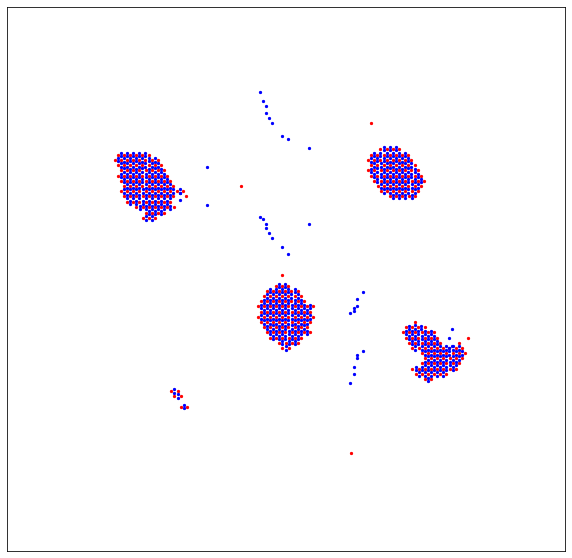
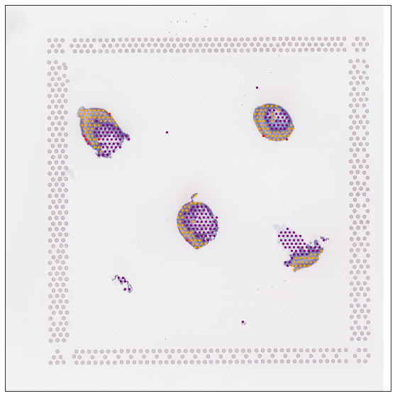

Getting quickly started¶
Here we present a quickly re-analysis of slide6 on the human intestinal dataset (Fawkner-Corbett et al., Cell, 2021), which including 346 raw ST spots.
This tutorial demonstrates how to enhanced the cellular resolution on 10x Visium data using STASCAN quickly.
The slide6 data are available at https://github.com/AbbyWY/STASCAN/tree/master/Vignettes/Fawkner-Corbett_Intestinal_Slide6.
For reference, we employed STASCAN on this dataset with three modules in 14 minutes. The experiment was conducted on the GPU platform (NVIDIA Tesla V100s with 32 GB memory).
Preparation¶
import sys
import os
vignettes_path = "./Vignettes/Fawkner-Corbett_Intestinal_Slide6/" # the path of downloaded slide6 data.
output_path = "./"
# You can optionally set the parameter 'epochs=2' to quickly test the pipeline, but you should set the parameter 'epochs=50' for the official run in this tutorial.
#epochs = 2
epochs = 50
import STASCAN
label_list = ['Epithelium', 'Fibroblasts', 'Muscularis', 'Neural'] # The list of cell types.
color_list = ["purple", "orange", "red", "gold"]
dict_label = dict(zip(label_list, color_list))
crop_size = 40 # Pixel radius of spot images.
raw_image = vignettes_path + "/A6.jpg" # The original H&E staining image, used for Space Ranger previously.
adjacent_image = vignettes_path+"/Simulated_A7.jpg"
Module 1: Cell annotation for unseen spots¶
Model running¶
if not os.path.exists(output_path + "/Module1/"):
os.makedirs(output_path + "/Module1/")
Module1_output = output_path + "/Module1/"
# The results will be automatically saved in the default Module1_output path.
run = STASCAN.run_STASCAN.Module()
run.UnseenSpot(Module1_output, vignettes_path + "/tissue_positions_list.csv", raw_image, crop_size, vignettes_path, epochs=epochs)
Running reports¶
The number of raw spots : 346
The strategy of pre-labelling is: joint
The number of prior spots : 288
The number of imputed spots : 614
Found 231 images belonging to 4 classes.
Found 57 images belonging to 4 classes.
{'Epithelium': 0, 'Fibroblasts': 1, 'Muscularis': 2, 'Neural': 3}
{'Epithelium': 0, 'Fibroblasts': 1, 'Muscularis': 2, 'Neural': 3}
Epoch 1/50 8/8 [==============================] - 10s 589ms/step - loss: 1.2529 - accuracy: 0.5541 - val_loss: 0.9509 - val_accuracy: 0.6316 Epoch 2/50 8/8 [==============================] - 3s 385ms/step - loss: 1.0719 - accuracy: 0.5455 - val_loss: 1.0987 - val_accuracy: 0.6316 Epoch 3/50 8/8 [==============================] - 3s 373ms/step - loss: 1.0329 - accuracy: 0.6061 - val_loss: 0.8360 - val_accuracy: 0.7018 Epoch 4/50 8/8 [==============================] - 3s 439ms/step - loss: 0.9308 - accuracy: 0.6277 - val_loss: 0.7543 - val_accuracy: 0.6667 Epoch 5/50 8/8 [==============================] - 3s 386ms/step - loss: 0.8571 - accuracy: 0.6883 - val_loss: 0.7092 - val_accuracy: 0.7368 Epoch 6/50 8/8 [==============================] - 3s 371ms/step - loss: 0.8062 - accuracy: 0.7143 - val_loss: 0.7969 - val_accuracy: 0.6316 Epoch 7/50 8/8 [==============================] - 3s 388ms/step - loss: 0.7512 - accuracy: 0.7143 - val_loss: 0.7314 - val_accuracy: 0.6667 Epoch 8/50 8/8 [==============================] - 3s 390ms/step - loss: 0.8180 - accuracy: 0.6797 - val_loss: 0.9108 - val_accuracy: 0.6316 Epoch 9/50 8/8 [==============================] - 3s 387ms/step - loss: 0.9679 - accuracy: 0.6277 - val_loss: 0.7732 - val_accuracy: 0.6316 Epoch 10/50 8/8 [==============================] - 3s 372ms/step - loss: 0.8724 - accuracy: 0.6883 - val_loss: 0.6475 - val_accuracy: 0.7719 Epoch 11/50 8/8 [==============================] - 3s 388ms/step - loss: 0.7356 - accuracy: 0.7359 - val_loss: 0.7226 - val_accuracy: 0.7018 Epoch 12/50 8/8 [==============================] - 3s 383ms/step - loss: 0.7953 - accuracy: 0.7056 - val_loss: 0.6358 - val_accuracy: 0.7895 Epoch 13/50 8/8 [==============================] - 3s 376ms/step - loss: 0.6318 - accuracy: 0.7792 - val_loss: 0.6780 - val_accuracy: 0.7368 Epoch 14/50 8/8 [==============================] - 3s 396ms/step - loss: 0.7530 - accuracy: 0.7489 - val_loss: 0.5250 - val_accuracy: 0.8246 Epoch 15/50 8/8 [==============================] - 3s 386ms/step - loss: 0.6392 - accuracy: 0.7835 - val_loss: 0.4861 - val_accuracy: 0.8421 Epoch 16/50 8/8 [==============================] - 3s 388ms/step - loss: 0.6003 - accuracy: 0.7922 - val_loss: 0.6001 - val_accuracy: 0.7544 Epoch 17/50 8/8 [==============================] - 3s 374ms/step - loss: 0.5739 - accuracy: 0.7879 - val_loss: 0.7940 - val_accuracy: 0.7018 Epoch 18/50 8/8 [==============================] - 3s 391ms/step - loss: 0.6568 - accuracy: 0.7922 - val_loss: 0.6823 - val_accuracy: 0.7193 Epoch 19/50 8/8 [==============================] - 3s 388ms/step - loss: 0.6321 - accuracy: 0.7532 - val_loss: 0.5100 - val_accuracy: 0.8421 Epoch 20/50 8/8 [==============================] - 3s 387ms/step - loss: 0.6485 - accuracy: 0.7879 - val_loss: 0.6803 - val_accuracy: 0.7544 Epoch 21/50 8/8 [==============================] - 3s 386ms/step - loss: 0.5430 - accuracy: 0.8225 - val_loss: 0.4647 - val_accuracy: 0.8070 Epoch 22/50 8/8 [==============================] - 3s 443ms/step - loss: 0.5112 - accuracy: 0.8139 - val_loss: 0.4715 - val_accuracy: 0.8246 Epoch 23/50 8/8 [==============================] - 3s 394ms/step - loss: 0.5262 - accuracy: 0.8139 - val_loss: 0.4027 - val_accuracy: 0.8421 Epoch 24/50 8/8 [==============================] - 3s 385ms/step - loss: 0.4891 - accuracy: 0.8225 - val_loss: 0.3832 - val_accuracy: 0.8421 Epoch 25/50 8/8 [==============================] - 3s 384ms/step - loss: 0.5453 - accuracy: 0.8009 - val_loss: 0.5432 - val_accuracy: 0.8070 Epoch 26/50 8/8 [==============================] - 3s 388ms/step - loss: 0.5616 - accuracy: 0.8052 - val_loss: 0.6269 - val_accuracy: 0.7895 Epoch 27/50 8/8 [==============================] - 3s 387ms/step - loss: 0.7241 - accuracy: 0.7229 - val_loss: 0.7899 - val_accuracy: 0.6316 Epoch 28/50 8/8 [==============================] - 3s 390ms/step - loss: 0.7617 - accuracy: 0.6364 - val_loss: 0.5832 - val_accuracy: 0.8246 Epoch 29/50 8/8 [==============================] - 3s 373ms/step - loss: 0.5885 - accuracy: 0.7835 - val_loss: 0.4726 - val_accuracy: 0.8246 Epoch 30/50 8/8 [==============================] - 3s 394ms/step - loss: 0.5091 - accuracy: 0.8225 - val_loss: 0.3974 - val_accuracy: 0.8596 Epoch 31/50 8/8 [==============================] - 3s 384ms/step - loss: 0.4623 - accuracy: 0.8355 - val_loss: 0.4177 - val_accuracy: 0.8772 Epoch 32/50 8/8 [==============================] - 3s 384ms/step - loss: 0.4702 - accuracy: 0.8268 - val_loss: 0.3325 - val_accuracy: 0.8596 Epoch 33/50 8/8 [==============================] - 3s 386ms/step - loss: 0.4183 - accuracy: 0.8268 - val_loss: 0.3291 - val_accuracy: 0.8596 Epoch 34/50 8/8 [==============================] - 3s 368ms/step - loss: 0.3732 - accuracy: 0.8571 - val_loss: 0.3183 - val_accuracy: 0.8772 Epoch 35/50 8/8 [==============================] - 3s 382ms/step - loss: 0.3735 - accuracy: 0.8615 - val_loss: 0.3958 - val_accuracy: 0.8421 Epoch 36/50 8/8 [==============================] - 3s 386ms/step - loss: 0.4011 - accuracy: 0.8528 - val_loss: 0.3298 - val_accuracy: 0.8421 Epoch 37/50 8/8 [==============================] - 3s 375ms/step - loss: 0.3407 - accuracy: 0.8615 - val_loss: 0.3932 - val_accuracy: 0.8596 Epoch 38/50 8/8 [==============================] - 3s 391ms/step - loss: 0.4359 - accuracy: 0.8398 - val_loss: 0.3584 - val_accuracy: 0.8772 Epoch 39/50 8/8 [==============================] - 3s 384ms/step - loss: 0.6582 - accuracy: 0.7835 - val_loss: 0.5134 - val_accuracy: 0.7895 Epoch 40/50 8/8 [==============================] - 3s 388ms/step - loss: 0.5390 - accuracy: 0.7749 - val_loss: 0.3622 - val_accuracy: 0.8421 Epoch 41/50 8/8 [==============================] - 3s 373ms/step - loss: 0.3892 - accuracy: 0.8571 - val_loss: 0.3431 - val_accuracy: 0.8772 Epoch 42/50 8/8 [==============================] - 3s 371ms/step - loss: 0.3348 - accuracy: 0.8701 - val_loss: 0.3722 - val_accuracy: 0.8772 Epoch 43/50 8/8 [==============================] - 3s 392ms/step - loss: 0.5298 - accuracy: 0.8139 - val_loss: 0.6732 - val_accuracy: 0.7368 Epoch 44/50 8/8 [==============================] - 3s 396ms/step - loss: 0.6072 - accuracy: 0.7835 - val_loss: 0.5309 - val_accuracy: 0.7895 Epoch 45/50 8/8 [==============================] - 3s 387ms/step - loss: 0.4821 - accuracy: 0.8139 - val_loss: 0.4598 - val_accuracy: 0.8421 Epoch 46/50 8/8 [==============================] - 3s 387ms/step - loss: 0.3751 - accuracy: 0.8355 - val_loss: 0.5681 - val_accuracy: 0.8246 Epoch 47/50 8/8 [==============================] - 3s 434ms/step - loss: 0.3721 - accuracy: 0.8485 - val_loss: 0.3583 - val_accuracy: 0.8421 Epoch 48/50 8/8 [==============================] - 3s 393ms/step - loss: 0.3207 - accuracy: 0.8701 - val_loss: 0.3952 - val_accuracy: 0.8246 Epoch 49/50 8/8 [==============================] - 3s 434ms/step - loss: 0.3372 - accuracy: 0.8571 - val_loss: 0.3400 - val_accuracy: 0.8772 Epoch 50/50 8/8 [==============================] - 3s 382ms/step - loss: 0.2969 - accuracy: 0.8874 - val_loss: 0.3144 - val_accuracy: 0.8772 {0: 'Epithelium', 1: 'Fibroblasts', 2: 'Muscularis', 3: 'Neural'} 1/1 [==============================] - 0s 438ms/step 1/1 [==============================] - 0s 34ms/step 1/1 [==============================] - 0s 30ms/step 1/1 [==============================] - 0s 33ms/step 1/1 [==============================] - 0s 32ms/step 1/1 [==============================] - 0s 30ms/step 1/1 [==============================] - 0s 32ms/step 1/1 [==============================] - 0s 32ms/step 1/1 [==============================] - 0s 33ms/step 1/1 [==============================] - 0s 32ms/step 1/1 [==============================] - 0s 32ms/step 1/1 [==============================] - 0s 32ms/step 1/1 [==============================] - 0s 30ms/step 1/1 [==============================] - 0s 32ms/step 1/1 [==============================] - 0s 33ms/step 1/1 [==============================] - 0s 34ms/step 1/1 [==============================] - 0s 32ms/step 1/1 [==============================] - 0s 33ms/step 1/1 [==============================] - 0s 32ms/step 1/1 [==============================] - 0s 32ms/step 1/1 [==============================] - 0s 31ms/step 1/1 [==============================] - 0s 34ms/step 1/1 [==============================] - 0s 32ms/step 1/1 [==============================] - 0s 32ms/step 1/1 [==============================] - 0s 30ms/step 1/1 [==============================] - 0s 32ms/step 1/1 [==============================] - 0s 32ms/step 1/1 [==============================] - 0s 30ms/step 1/1 [==============================] - 0s 33ms/step 1/1 [==============================] - 0s 32ms/step 1/1 [==============================] - 0s 32ms/step 1/1 [==============================] - 0s 29ms/step 1/1 [==============================] - 0s 30ms/step 1/1 [==============================] - 0s 30ms/step 1/1 [==============================] - 0s 33ms/step 1/1 [==============================] - 0s 33ms/step 1/1 [==============================] - 0s 32ms/step 1/1 [==============================] - 0s 29ms/step 1/1 [==============================] - 0s 32ms/step 1/1 [==============================] - 0s 32ms/step 1/1 [==============================] - 0s 32ms/step 1/1 [==============================] - 0s 32ms/step 1/1 [==============================] - 0s 33ms/step 1/1 [==============================] - 0s 33ms/step 1/1 [==============================] - 0s 32ms/step 1/1 [==============================] - 0s 33ms/step 1/1 [==============================] - 0s 32ms/step 1/1 [==============================] - 0s 36ms/step 1/1 [==============================] - 0s 32ms/step 1/1 [==============================] - 0s 32ms/step 1/1 [==============================] - 0s 33ms/step 1/1 [==============================] - 0s 36ms/step 1/1 [==============================] - 0s 33ms/step 1/1 [==============================] - 0s 32ms/step 1/1 [==============================] - 0s 33ms/step 1/1 [==============================] - 0s 34ms/step 1/1 [==============================] - 0s 32ms/step 1/1 [==============================] - 0s 32ms/step 1/1 [==============================] - 0s 33ms/step 1/1 [==============================] - 0s 31ms/step 1/1 [==============================] - 0s 33ms/step 1/1 [==============================] - 0s 31ms/step 1/1 [==============================] - 0s 33ms/step 1/1 [==============================] - 0s 32ms/step 1/1 [==============================] - 0s 33ms/step 1/1 [==============================] - 0s 32ms/step 1/1 [==============================] - 0s 34ms/step 1/1 [==============================] - 0s 32ms/step 1/1 [==============================] - 0s 31ms/step 1/1 [==============================] - 0s 32ms/step 1/1 [==============================] - 0s 33ms/step 1/1 [==============================] - 0s 31ms/step 1/1 [==============================] - 0s 33ms/step 1/1 [==============================] - 0s 33ms/step 1/1 [==============================] - 0s 32ms/step 1/1 [==============================] - 0s 31ms/step 1/1 [==============================] - 0s 30ms/step 1/1 [==============================] - 0s 33ms/step 1/1 [==============================] - 0s 33ms/step 1/1 [==============================] - 0s 32ms/step 1/1 [==============================] - 0s 30ms/step 1/1 [==============================] - 0s 32ms/step 1/1 [==============================] - 0s 33ms/step 1/1 [==============================] - 0s 32ms/step 1/1 [==============================] - 0s 33ms/step 1/1 [==============================] - 0s 32ms/step 1/1 [==============================] - 0s 33ms/step 1/1 [==============================] - 0s 33ms/step 1/1 [==============================] - 0s 34ms/step 1/1 [==============================] - 0s 31ms/step 1/1 [==============================] - 0s 29ms/step 1/1 [==============================] - 0s 29ms/step 1/1 [==============================] - 0s 30ms/step 1/1 [==============================] - 0s 33ms/step 1/1 [==============================] - 0s 30ms/step 1/1 [==============================] - 0s 31ms/step 1/1 [==============================] - 0s 30ms/step 1/1 [==============================] - 0s 29ms/step 1/1 [==============================] - 0s 32ms/step 1/1 [==============================] - 0s 32ms/step 1/1 [==============================] - 0s 32ms/step 1/1 [==============================] - 0s 29ms/step 1/1 [==============================] - 0s 32ms/step 1/1 [==============================] - 0s 32ms/step 1/1 [==============================] - 0s 32ms/step 1/1 [==============================] - 0s 33ms/step 1/1 [==============================] - 0s 31ms/step 1/1 [==============================] - 0s 34ms/step 1/1 [==============================] - 0s 32ms/step 1/1 [==============================] - 0s 32ms/step 1/1 [==============================] - 0s 32ms/step 1/1 [==============================] - 0s 33ms/step 1/1 [==============================] - 0s 31ms/step 1/1 [==============================] - 0s 33ms/step 1/1 [==============================] - 0s 32ms/step 1/1 [==============================] - 0s 33ms/step 1/1 [==============================] - 0s 33ms/step 1/1 [==============================] - 0s 30ms/step 1/1 [==============================] - 0s 32ms/step 1/1 [==============================] - 0s 32ms/step 1/1 [==============================] - 0s 32ms/step 1/1 [==============================] - 0s 33ms/step 1/1 [==============================] - 0s 32ms/step 1/1 [==============================] - 0s 32ms/step 1/1 [==============================] - 0s 30ms/step 1/1 [==============================] - 0s 30ms/step 1/1 [==============================] - 0s 30ms/step 1/1 [==============================] - 0s 31ms/step 1/1 [==============================] - 0s 33ms/step 1/1 [==============================] - 0s 30ms/step 1/1 [==============================] - 0s 34ms/step 1/1 [==============================] - 0s 33ms/step 1/1 [==============================] - 0s 32ms/step 1/1 [==============================] - 0s 32ms/step 1/1 [==============================] - 0s 33ms/step 1/1 [==============================] - 0s 32ms/step 1/1 [==============================] - 0s 33ms/step 1/1 [==============================] - 0s 30ms/step 1/1 [==============================] - 0s 31ms/step 1/1 [==============================] - 0s 33ms/step 1/1 [==============================] - 0s 32ms/step 1/1 [==============================] - 0s 32ms/step 1/1 [==============================] - 0s 34ms/step 1/1 [==============================] - 0s 33ms/step 1/1 [==============================] - 0s 32ms/step 1/1 [==============================] - 0s 30ms/step 1/1 [==============================] - 0s 30ms/step 1/1 [==============================] - 0s 32ms/step 1/1 [==============================] - 0s 33ms/step 1/1 [==============================] - 0s 34ms/step 1/1 [==============================] - 0s 32ms/step 1/1 [==============================] - 0s 31ms/step 1/1 [==============================] - 0s 32ms/step 1/1 [==============================] - 0s 33ms/step 1/1 [==============================] - 0s 32ms/step 1/1 [==============================] - 0s 32ms/step 1/1 [==============================] - 0s 32ms/step 1/1 [==============================] - 0s 38ms/step 1/1 [==============================] - 0s 34ms/step 1/1 [==============================] - 0s 30ms/step 1/1 [==============================] - 0s 32ms/step 1/1 [==============================] - 0s 33ms/step 1/1 [==============================] - 0s 34ms/step 1/1 [==============================] - 0s 33ms/step 1/1 [==============================] - 0s 32ms/step 1/1 [==============================] - 0s 32ms/step 1/1 [==============================] - 0s 32ms/step 1/1 [==============================] - 0s 32ms/step 1/1 [==============================] - 0s 32ms/step 1/1 [==============================] - 0s 33ms/step 1/1 [==============================] - 0s 32ms/step 1/1 [==============================] - 0s 32ms/step 1/1 [==============================] - 0s 34ms/step 1/1 [==============================] - 0s 32ms/step 1/1 [==============================] - 0s 32ms/step 1/1 [==============================] - 0s 32ms/step 1/1 [==============================] - 0s 36ms/step 1/1 [==============================] - 0s 33ms/step 1/1 [==============================] - 0s 33ms/step 1/1 [==============================] - 0s 33ms/step 1/1 [==============================] - 0s 32ms/step 1/1 [==============================] - 0s 31ms/step 1/1 [==============================] - 0s 33ms/step 1/1 [==============================] - 0s 33ms/step 1/1 [==============================] - 0s 32ms/step 1/1 [==============================] - 0s 34ms/step 1/1 [==============================] - 0s 32ms/step 1/1 [==============================] - 0s 32ms/step 1/1 [==============================] - 0s 32ms/step 1/1 [==============================] - 0s 34ms/step 1/1 [==============================] - 0s 30ms/step 1/1 [==============================] - 0s 30ms/step 1/1 [==============================] - 0s 32ms/step 1/1 [==============================] - 0s 32ms/step 1/1 [==============================] - 0s 32ms/step 1/1 [==============================] - 0s 29ms/step 1/1 [==============================] - 0s 33ms/step 1/1 [==============================] - 0s 33ms/step 1/1 [==============================] - 0s 34ms/step 1/1 [==============================] - 0s 33ms/step 1/1 [==============================] - 0s 33ms/step 1/1 [==============================] - 0s 32ms/step 1/1 [==============================] - 0s 32ms/step 1/1 [==============================] - 0s 32ms/step 1/1 [==============================] - 0s 32ms/step 1/1 [==============================] - 0s 34ms/step 1/1 [==============================] - 0s 30ms/step 1/1 [==============================] - 0s 35ms/step 1/1 [==============================] - 0s 30ms/step 1/1 [==============================] - 0s 32ms/step 1/1 [==============================] - 0s 30ms/step 1/1 [==============================] - 0s 33ms/step 1/1 [==============================] - 0s 31ms/step 1/1 [==============================] - 0s 33ms/step 1/1 [==============================] - 0s 32ms/step 1/1 [==============================] - 0s 32ms/step 1/1 [==============================] - 0s 30ms/step 1/1 [==============================] - 0s 33ms/step 1/1 [==============================] - 0s 32ms/step 1/1 [==============================] - 0s 32ms/step 1/1 [==============================] - 0s 33ms/step 1/1 [==============================] - 0s 34ms/step 1/1 [==============================] - 0s 33ms/step 1/1 [==============================] - 0s 33ms/step 1/1 [==============================] - 0s 32ms/step 1/1 [==============================] - 0s 30ms/step 1/1 [==============================] - 0s 33ms/step 1/1 [==============================] - 0s 32ms/step 1/1 [==============================] - 0s 32ms/step 1/1 [==============================] - 0s 32ms/step 1/1 [==============================] - 0s 33ms/step 1/1 [==============================] - 0s 32ms/step 1/1 [==============================] - 0s 32ms/step 1/1 [==============================] - 0s 32ms/step 1/1 [==============================] - 0s 31ms/step 1/1 [==============================] - 0s 30ms/step 1/1 [==============================] - 0s 29ms/step 1/1 [==============================] - 0s 32ms/step 1/1 [==============================] - 0s 32ms/step 1/1 [==============================] - 0s 32ms/step 1/1 [==============================] - 0s 32ms/step 1/1 [==============================] - 0s 33ms/step 1/1 [==============================] - 0s 32ms/step 1/1 [==============================] - 0s 32ms/step 1/1 [==============================] - 0s 33ms/step 1/1 [==============================] - 0s 32ms/step 1/1 [==============================] - 0s 30ms/step 1/1 [==============================] - 0s 32ms/step 1/1 [==============================] - 0s 32ms/step 1/1 [==============================] - 0s 32ms/step 1/1 [==============================] - 0s 33ms/step 1/1 [==============================] - 0s 32ms/step 1/1 [==============================] - 0s 33ms/step 1/1 [==============================] - 0s 32ms/step 1/1 [==============================] - 0s 32ms/step 1/1 [==============================] - 0s 30ms/step 1/1 [==============================] - 0s 32ms/step 1/1 [==============================] - 0s 33ms/step 1/1 [==============================] - 0s 34ms/step 1/1 [==============================] - 0s 32ms/step 1/1 [==============================] - 0s 33ms/step 1/1 [==============================] - 0s 32ms/step 1/1 [==============================] - 0s 30ms/step 1/1 [==============================] - 0s 30ms/step 1/1 [==============================] - 0s 32ms/step 1/1 [==============================] - 0s 32ms/step 1/1 [==============================] - 0s 32ms/step 1/1 [==============================] - 0s 32ms/step 1/1 [==============================] - 0s 33ms/step 1/1 [==============================] - 0s 36ms/step 1/1 [==============================] - 0s 30ms/step 1/1 [==============================] - 0s 34ms/step 1/1 [==============================] - 0s 33ms/step 1/1 [==============================] - 0s 30ms/step 1/1 [==============================] - 0s 33ms/step 1/1 [==============================] - 0s 32ms/step 1/1 [==============================] - 0s 33ms/step 1/1 [==============================] - 0s 32ms/step 1/1 [==============================] - 0s 30ms/step 1/1 [==============================] - 0s 29ms/step 1/1 [==============================] - 0s 36ms/step 1/1 [==============================] - 0s 32ms/step 1/1 [==============================] - 0s 30ms/step 1/1 [==============================] - 0s 32ms/step 1/1 [==============================] - 0s 32ms/step 1/1 [==============================] - 0s 33ms/step 1/1 [==============================] - 0s 36ms/step 1/1 [==============================] - 0s 32ms/step 1/1 [==============================] - 0s 30ms/step 1/1 [==============================] - 0s 33ms/step 1/1 [==============================] - 0s 33ms/step 1/1 [==============================] - 0s 30ms/step 1/1 [==============================] - 0s 33ms/step 1/1 [==============================] - 0s 32ms/step 1/1 [==============================] - 0s 32ms/step 1/1 [==============================] - 0s 33ms/step 1/1 [==============================] - 0s 32ms/step 1/1 [==============================] - 0s 34ms/step 1/1 [==============================] - 0s 30ms/step 1/1 [==============================] - 0s 30ms/step 1/1 [==============================] - 0s 32ms/step 1/1 [==============================] - 0s 32ms/step 1/1 [==============================] - 0s 30ms/step 1/1 [==============================] - 0s 32ms/step 1/1 [==============================] - 0s 32ms/step 1/1 [==============================] - 0s 32ms/step 1/1 [==============================] - 0s 32ms/step 1/1 [==============================] - 0s 32ms/step 1/1 [==============================] - 0s 32ms/step 1/1 [==============================] - 0s 32ms/step 1/1 [==============================] - 0s 31ms/step 1/1 [==============================] - 0s 32ms/step 1/1 [==============================] - 0s 32ms/step 1/1 [==============================] - 0s 32ms/step 1/1 [==============================] - 0s 32ms/step 1/1 [==============================] - 0s 33ms/step 1/1 [==============================] - 0s 32ms/step 1/1 [==============================] - 0s 31ms/step 1/1 [==============================] - 0s 32ms/step 1/1 [==============================] - 0s 32ms/step 1/1 [==============================] - 0s 30ms/step 1/1 [==============================] - 0s 33ms/step 1/1 [==============================] - 0s 31ms/step 1/1 [==============================] - 0s 30ms/step 1/1 [==============================] - 0s 32ms/step 1/1 [==============================] - 0s 32ms/step 1/1 [==============================] - 0s 33ms/step 1/1 [==============================] - 0s 33ms/step 1/1 [==============================] - 0s 33ms/step 1/1 [==============================] - 0s 32ms/step 1/1 [==============================] - 0s 31ms/step 1/1 [==============================] - 0s 30ms/step 1/1 [==============================] - 0s 33ms/step 1/1 [==============================] - 0s 32ms/step 1/1 [==============================] - 0s 33ms/step 1/1 [==============================] - 0s 32ms/step 1/1 [==============================] - 0s 30ms/step 1/1 [==============================] - 0s 34ms/step 1/1 [==============================] - 0s 30ms/step 1/1 [==============================] - 0s 32ms/step 1/1 [==============================] - 0s 32ms/step 1/1 [==============================] - 0s 32ms/step 1/1 [==============================] - 0s 32ms/step 1/1 [==============================] - 0s 32ms/step 1/1 [==============================] - 0s 32ms/step 1/1 [==============================] - 0s 30ms/step 1/1 [==============================] - 0s 33ms/step 1/1 [==============================] - 0s 33ms/step 1/1 [==============================] - 0s 34ms/step 1/1 [==============================] - 0s 32ms/step 1/1 [==============================] - 0s 30ms/step 1/1 [==============================] - 0s 32ms/step 1/1 [==============================] - 0s 33ms/step 1/1 [==============================] - 0s 33ms/step 1/1 [==============================] - 0s 30ms/step 1/1 [==============================] - 0s 31ms/step 1/1 [==============================] - 0s 30ms/step 1/1 [==============================] - 0s 30ms/step 1/1 [==============================] - 0s 32ms/step 1/1 [==============================] - 0s 32ms/step 1/1 [==============================] - 0s 32ms/step 1/1 [==============================] - 0s 32ms/step 1/1 [==============================] - 0s 33ms/step 1/1 [==============================] - 0s 32ms/step 1/1 [==============================] - 0s 32ms/step 1/1 [==============================] - 0s 30ms/step 1/1 [==============================] - 0s 32ms/step 1/1 [==============================] - 0s 32ms/step 1/1 [==============================] - 0s 33ms/step 1/1 [==============================] - 0s 33ms/step 1/1 [==============================] - 0s 33ms/step 1/1 [==============================] - 0s 35ms/step 1/1 [==============================] - 0s 32ms/step 1/1 [==============================] - 0s 30ms/step 1/1 [==============================] - 0s 32ms/step 1/1 [==============================] - 0s 32ms/step 1/1 [==============================] - 0s 32ms/step 1/1 [==============================] - 0s 30ms/step 1/1 [==============================] - 0s 32ms/step 1/1 [==============================] - 0s 32ms/step 1/1 [==============================] - 0s 32ms/step 1/1 [==============================] - 0s 32ms/step 1/1 [==============================] - 0s 32ms/step 1/1 [==============================] - 0s 32ms/step 1/1 [==============================] - 0s 32ms/step 1/1 [==============================] - 0s 32ms/step 1/1 [==============================] - 0s 32ms/step 1/1 [==============================] - 0s 32ms/step 1/1 [==============================] - 0s 32ms/step 1/1 [==============================] - 0s 33ms/step 1/1 [==============================] - 0s 33ms/step 1/1 [==============================] - 0s 31ms/step 1/1 [==============================] - 0s 31ms/step 1/1 [==============================] - 0s 33ms/step 1/1 [==============================] - 0s 35ms/step 1/1 [==============================] - 0s 34ms/step 1/1 [==============================] - 0s 33ms/step 1/1 [==============================] - 0s 33ms/step 1/1 [==============================] - 0s 33ms/step 1/1 [==============================] - 0s 34ms/step 1/1 [==============================] - 0s 33ms/step 1/1 [==============================] - 0s 31ms/step 1/1 [==============================] - 0s 31ms/step 1/1 [==============================] - 0s 32ms/step 1/1 [==============================] - 0s 34ms/step 1/1 [==============================] - 0s 34ms/step 1/1 [==============================] - 0s 33ms/step 1/1 [==============================] - 0s 34ms/step 1/1 [==============================] - 0s 33ms/step 1/1 [==============================] - 0s 32ms/step 1/1 [==============================] - 0s 33ms/step 1/1 [==============================] - 0s 36ms/step 1/1 [==============================] - 0s 33ms/step 1/1 [==============================] - 0s 33ms/step 1/1 [==============================] - 0s 34ms/step 1/1 [==============================] - 0s 33ms/step 1/1 [==============================] - 0s 33ms/step 1/1 [==============================] - 0s 32ms/step 1/1 [==============================] - 0s 33ms/step 1/1 [==============================] - 0s 33ms/step 1/1 [==============================] - 0s 30ms/step 1/1 [==============================] - 0s 34ms/step 1/1 [==============================] - 0s 33ms/step 1/1 [==============================] - 0s 32ms/step 1/1 [==============================] - 0s 33ms/step 1/1 [==============================] - 0s 33ms/step 1/1 [==============================] - 0s 33ms/step 1/1 [==============================] - 0s 32ms/step 1/1 [==============================] - 0s 32ms/step 1/1 [==============================] - 0s 32ms/step 1/1 [==============================] - 0s 33ms/step 1/1 [==============================] - 0s 32ms/step 1/1 [==============================] - 0s 33ms/step 1/1 [==============================] - 0s 32ms/step 1/1 [==============================] - 0s 33ms/step 1/1 [==============================] - 0s 33ms/step 1/1 [==============================] - 0s 33ms/step 1/1 [==============================] - 0s 33ms/step 1/1 [==============================] - 0s 35ms/step 1/1 [==============================] - 0s 32ms/step 1/1 [==============================] - 0s 33ms/step 1/1 [==============================] - 0s 33ms/step 1/1 [==============================] - 0s 33ms/step 1/1 [==============================] - 0s 33ms/step 1/1 [==============================] - 0s 33ms/step 1/1 [==============================] - 0s 33ms/step 1/1 [==============================] - 0s 33ms/step 1/1 [==============================] - 0s 32ms/step 1/1 [==============================] - 0s 33ms/step 1/1 [==============================] - 0s 33ms/step 1/1 [==============================] - 0s 32ms/step 1/1 [==============================] - 0s 32ms/step 1/1 [==============================] - 0s 32ms/step 1/1 [==============================] - 0s 33ms/step 1/1 [==============================] - 0s 33ms/step 1/1 [==============================] - 0s 33ms/step 1/1 [==============================] - 0s 32ms/step 1/1 [==============================] - 0s 30ms/step 1/1 [==============================] - 0s 35ms/step 1/1 [==============================] - 0s 33ms/step 1/1 [==============================] - 0s 31ms/step 1/1 [==============================] - 0s 32ms/step 1/1 [==============================] - 0s 33ms/step 1/1 [==============================] - 0s 33ms/step 1/1 [==============================] - 0s 33ms/step 1/1 [==============================] - 0s 33ms/step 1/1 [==============================] - 0s 33ms/step 1/1 [==============================] - 0s 33ms/step 1/1 [==============================] - 0s 33ms/step 1/1 [==============================] - 0s 33ms/step 1/1 [==============================] - 0s 30ms/step 1/1 [==============================] - 0s 34ms/step 1/1 [==============================] - 0s 33ms/step 1/1 [==============================] - 0s 32ms/step 1/1 [==============================] - 0s 34ms/step 1/1 [==============================] - 0s 33ms/step 1/1 [==============================] - 0s 33ms/step 1/1 [==============================] - 0s 33ms/step 1/1 [==============================] - 0s 32ms/step 1/1 [==============================] - 0s 32ms/step 1/1 [==============================] - 0s 32ms/step 1/1 [==============================] - 0s 32ms/step 1/1 [==============================] - 0s 33ms/step 1/1 [==============================] - 0s 32ms/step 1/1 [==============================] - 0s 32ms/step 1/1 [==============================] - 0s 32ms/step 1/1 [==============================] - 0s 33ms/step 1/1 [==============================] - 0s 32ms/step 1/1 [==============================] - 0s 32ms/step 1/1 [==============================] - 0s 32ms/step 1/1 [==============================] - 0s 30ms/step 1/1 [==============================] - 0s 33ms/step 1/1 [==============================] - 0s 32ms/step 1/1 [==============================] - 0s 33ms/step 1/1 [==============================] - 0s 33ms/step 1/1 [==============================] - 0s 33ms/step 1/1 [==============================] - 0s 31ms/step 1/1 [==============================] - 0s 34ms/step 1/1 [==============================] - 0s 32ms/step 1/1 [==============================] - 0s 35ms/step 1/1 [==============================] - 0s 33ms/step 1/1 [==============================] - 0s 34ms/step 1/1 [==============================] - 0s 32ms/step 1/1 [==============================] - 0s 32ms/step 1/1 [==============================] - 0s 33ms/step 1/1 [==============================] - 0s 32ms/step 1/1 [==============================] - 0s 33ms/step 1/1 [==============================] - 0s 33ms/step 1/1 [==============================] - 0s 33ms/step 1/1 [==============================] - 0s 33ms/step 1/1 [==============================] - 0s 33ms/step 1/1 [==============================] - 0s 32ms/step 1/1 [==============================] - 0s 33ms/step 1/1 [==============================] - 0s 32ms/step 1/1 [==============================] - 0s 33ms/step 1/1 [==============================] - 0s 34ms/step 1/1 [==============================] - 0s 33ms/step 1/1 [==============================] - 0s 35ms/step 1/1 [==============================] - 0s 33ms/step 1/1 [==============================] - 0s 33ms/step 1/1 [==============================] - 0s 32ms/step 1/1 [==============================] - 0s 32ms/step 1/1 [==============================] - 0s 31ms/step 1/1 [==============================] - 0s 33ms/step 1/1 [==============================] - 0s 32ms/step 1/1 [==============================] - 0s 33ms/step 1/1 [==============================] - 0s 33ms/step 1/1 [==============================] - 0s 35ms/step 1/1 [==============================] - 0s 33ms/step 1/1 [==============================] - 0s 32ms/step 1/1 [==============================] - 0s 33ms/step 1/1 [==============================] - 0s 33ms/step 1/1 [==============================] - 0s 33ms/step 1/1 [==============================] - 0s 32ms/step 1/1 [==============================] - 0s 33ms/step 1/1 [==============================] - 0s 33ms/step 1/1 [==============================] - 0s 33ms/step 1/1 [==============================] - 0s 33ms/step 1/1 [==============================] - 0s 33ms/step 1/1 [==============================] - 0s 32ms/step 1/1 [==============================] - 0s 33ms/step 1/1 [==============================] - 0s 33ms/step 1/1 [==============================] - 0s 32ms/step 1/1 [==============================] - 0s 33ms/step 1/1 [==============================] - 0s 33ms/step 1/1 [==============================] - 0s 34ms/step 1/1 [==============================] - 0s 33ms/step 1/1 [==============================] - 0s 33ms/step 1/1 [==============================] - 0s 33ms/step 1/1 [==============================] - 0s 33ms/step 1/1 [==============================] - 0s 33ms/step 1/1 [==============================] - 0s 32ms/step 1/1 [==============================] - 0s 32ms/step 1/1 [==============================] - 0s 33ms/step 1/1 [==============================] - 0s 32ms/step 1/1 [==============================] - 0s 35ms/step 1/1 [==============================] - 0s 32ms/step 1/1 [==============================] - 0s 32ms/step 1/1 [==============================] - 0s 34ms/step 1/1 [==============================] - 0s 33ms/step 1/1 [==============================] - 0s 32ms/step 1/1 [==============================] - 0s 33ms/step 1/1 [==============================] - 0s 33ms/step 1/1 [==============================] - 0s 31ms/step 1/1 [==============================] - 0s 32ms/step 1/1 [==============================] - 0s 32ms/step 1/1 [==============================] - 0s 35ms/step 1/1 [==============================] - 0s 32ms/step 1/1 [==============================] - 0s 32ms/step 1/1 [==============================] - 0s 34ms/step 1/1 [==============================] - 0s 32ms/step 1/1 [==============================] - 0s 33ms/step 1/1 [==============================] - 0s 34ms/step 1/1 [==============================] - 0s 33ms/step 1/1 [==============================] - 0s 31ms/step 1/1 [==============================] - 0s 33ms/step 1/1 [==============================] - 0s 32ms/step 1/1 [==============================] - 0s 33ms/step 1/1 [==============================] - 0s 33ms/step 1/1 [==============================] - 0s 33ms/step 1/1 [==============================] - 0s 33ms/step 1/1 [==============================] - 0s 32ms/step 1/1 [==============================] - 0s 33ms/step 1/1 [==============================] - 0s 33ms/step 1/1 [==============================] - 0s 33ms/step 1/1 [==============================] - 0s 32ms/step 1/1 [==============================] - 0s 35ms/step 1/1 [==============================] - 0s 33ms/step 1/1 [==============================] - 0s 33ms/step 1/1 [==============================] - 0s 35ms/step 1/1 [==============================] - 0s 33ms/step 1/1 [==============================] - 0s 32ms/step 1/1 [==============================] - 0s 33ms/step 1/1 [==============================] - 0s 32ms/step 1/1 [==============================] - 0s 33ms/step 1/1 [==============================] - 0s 32ms/step 1/1 [==============================] - 0s 33ms/step 1/1 [==============================] - 0s 32ms/step 1/1 [==============================] - 0s 33ms/step 1/1 [==============================] - 0s 32ms/step 1/1 [==============================] - 0s 33ms/step 1/1 [==============================] - 0s 32ms/step 1/1 [==============================] - 0s 33ms/step 1/1 [==============================] - 0s 30ms/step 1/1 [==============================] - 0s 34ms/step 1/1 [==============================] - 0s 33ms/step 1/1 [==============================] - 0s 33ms/step 1/1 [==============================] - 0s 32ms/step 1/1 [==============================] - 0s 32ms/step 1/1 [==============================] - 0s 33ms/step 1/1 [==============================] - 0s 33ms/step 1/1 [==============================] - 0s 33ms/step 1/1 [==============================] - 0s 33ms/step 1/1 [==============================] - 0s 33ms/step {0: 'Epithelium', 1: 'Fibroblasts', 2: 'Muscularis', 3: 'Neural'} 1/1 [==============================] - 0s 32ms/step 1/1 [==============================] - 0s 32ms/step 1/1 [==============================] - 0s 33ms/step 1/1 [==============================] - 0s 40ms/step 1/1 [==============================] - 0s 32ms/step 1/1 [==============================] - 0s 32ms/step 1/1 [==============================] - 0s 32ms/step 1/1 [==============================] - 0s 32ms/step 1/1 [==============================] - 0s 33ms/step 1/1 [==============================] - 0s 30ms/step 1/1 [==============================] - 0s 33ms/step 1/1 [==============================] - 0s 33ms/step 1/1 [==============================] - 0s 38ms/step 1/1 [==============================] - 0s 32ms/step 1/1 [==============================] - 0s 33ms/step 1/1 [==============================] - 0s 33ms/step 1/1 [==============================] - 0s 34ms/step 1/1 [==============================] - 0s 33ms/step 1/1 [==============================] - 0s 33ms/step 1/1 [==============================] - 0s 33ms/step 1/1 [==============================] - 0s 33ms/step 1/1 [==============================] - 0s 33ms/step 1/1 [==============================] - 0s 32ms/step 1/1 [==============================] - 0s 32ms/step 1/1 [==============================] - 0s 32ms/step 1/1 [==============================] - 0s 33ms/step 1/1 [==============================] - 0s 32ms/step 1/1 [==============================] - 0s 33ms/step 1/1 [==============================] - 0s 36ms/step 1/1 [==============================] - 0s 33ms/step 1/1 [==============================] - 0s 32ms/step 1/1 [==============================] - 0s 34ms/step 1/1 [==============================] - 0s 33ms/step 1/1 [==============================] - 0s 32ms/step 1/1 [==============================] - 0s 32ms/step 1/1 [==============================] - 0s 32ms/step 1/1 [==============================] - 0s 33ms/step 1/1 [==============================] - 0s 33ms/step 1/1 [==============================] - 0s 32ms/step 1/1 [==============================] - 0s 32ms/step 1/1 [==============================] - 0s 34ms/step 1/1 [==============================] - 0s 33ms/step 1/1 [==============================] - 0s 32ms/step 1/1 [==============================] - 0s 36ms/step 1/1 [==============================] - 0s 32ms/step 1/1 [==============================] - 0s 30ms/step 1/1 [==============================] - 0s 32ms/step 1/1 [==============================] - 0s 33ms/step 1/1 [==============================] - 0s 32ms/step 1/1 [==============================] - 0s 32ms/step 1/1 [==============================] - 0s 32ms/step 1/1 [==============================] - 0s 32ms/step 1/1 [==============================] - 0s 32ms/step 1/1 [==============================] - 0s 32ms/step 1/1 [==============================] - 0s 30ms/step 1/1 [==============================] - 0s 32ms/step 1/1 [==============================] - 0s 31ms/step 1/1 [==============================] - 0s 32ms/step 1/1 [==============================] - 0s 32ms/step 1/1 [==============================] - 0s 30ms/step 1/1 [==============================] - 0s 33ms/step 1/1 [==============================] - 0s 33ms/step 1/1 [==============================] - 0s 32ms/step 1/1 [==============================] - 0s 33ms/step 1/1 [==============================] - 0s 31ms/step 1/1 [==============================] - 0s 32ms/step 1/1 [==============================] - 0s 32ms/step 1/1 [==============================] - 0s 32ms/step 1/1 [==============================] - 0s 39ms/step 1/1 [==============================] - 0s 30ms/step 1/1 [==============================] - 0s 32ms/step 1/1 [==============================] - 0s 32ms/step 1/1 [==============================] - 0s 35ms/step 1/1 [==============================] - 0s 32ms/step 1/1 [==============================] - 0s 33ms/step 1/1 [==============================] - 0s 30ms/step 1/1 [==============================] - 0s 33ms/step 1/1 [==============================] - 0s 32ms/step 1/1 [==============================] - 0s 32ms/step 1/1 [==============================] - 0s 32ms/step 1/1 [==============================] - 0s 32ms/step 1/1 [==============================] - 0s 32ms/step 1/1 [==============================] - 0s 32ms/step 1/1 [==============================] - 0s 32ms/step 1/1 [==============================] - 0s 32ms/step 1/1 [==============================] - 0s 32ms/step 1/1 [==============================] - 0s 33ms/step 1/1 [==============================] - 0s 31ms/step 1/1 [==============================] - 0s 32ms/step 1/1 [==============================] - 0s 32ms/step 1/1 [==============================] - 0s 32ms/step 1/1 [==============================] - 0s 31ms/step 1/1 [==============================] - 0s 29ms/step 1/1 [==============================] - 0s 32ms/step 1/1 [==============================] - 0s 32ms/step 1/1 [==============================] - 0s 36ms/step 1/1 [==============================] - 0s 32ms/step 1/1 [==============================] - 0s 32ms/step 1/1 [==============================] - 0s 32ms/step 1/1 [==============================] - 0s 34ms/step 1/1 [==============================] - 0s 33ms/step 1/1 [==============================] - 0s 31ms/step 1/1 [==============================] - 0s 35ms/step 1/1 [==============================] - 0s 32ms/step 1/1 [==============================] - 0s 32ms/step 1/1 [==============================] - 0s 32ms/step 1/1 [==============================] - 0s 33ms/step 1/1 [==============================] - 0s 32ms/step 1/1 [==============================] - 0s 33ms/step 1/1 [==============================] - 0s 33ms/step 1/1 [==============================] - 0s 30ms/step 1/1 [==============================] - 0s 32ms/step 1/1 [==============================] - 0s 32ms/step 1/1 [==============================] - 0s 33ms/step 1/1 [==============================] - 0s 32ms/step 1/1 [==============================] - 0s 31ms/step 1/1 [==============================] - 0s 35ms/step 1/1 [==============================] - 0s 33ms/step 1/1 [==============================] - 0s 33ms/step 1/1 [==============================] - 0s 32ms/step 1/1 [==============================] - 0s 32ms/step 1/1 [==============================] - 0s 31ms/step 1/1 [==============================] - 0s 32ms/step 1/1 [==============================] - 0s 34ms/step 1/1 [==============================] - 0s 32ms/step 1/1 [==============================] - 0s 32ms/step 1/1 [==============================] - 0s 32ms/step 1/1 [==============================] - 0s 32ms/step 1/1 [==============================] - 0s 33ms/step 1/1 [==============================] - 0s 33ms/step 1/1 [==============================] - 0s 33ms/step 1/1 [==============================] - 0s 33ms/step 1/1 [==============================] - 0s 33ms/step 1/1 [==============================] - 0s 32ms/step 1/1 [==============================] - 0s 32ms/step 1/1 [==============================] - 0s 32ms/step 1/1 [==============================] - 0s 32ms/step 1/1 [==============================] - 0s 32ms/step 1/1 [==============================] - 0s 32ms/step 1/1 [==============================] - 0s 32ms/step 1/1 [==============================] - 0s 32ms/step 1/1 [==============================] - 0s 32ms/step 1/1 [==============================] - 0s 32ms/step 1/1 [==============================] - 0s 31ms/step 1/1 [==============================] - 0s 33ms/step 1/1 [==============================] - 0s 32ms/step 1/1 [==============================] - 0s 32ms/step 1/1 [==============================] - 0s 34ms/step 1/1 [==============================] - 0s 30ms/step 1/1 [==============================] - 0s 30ms/step 1/1 [==============================] - 0s 33ms/step 1/1 [==============================] - 0s 32ms/step 1/1 [==============================] - 0s 30ms/step 1/1 [==============================] - 0s 33ms/step 1/1 [==============================] - 0s 33ms/step 1/1 [==============================] - 0s 32ms/step 1/1 [==============================] - 0s 36ms/step 1/1 [==============================] - 0s 32ms/step 1/1 [==============================] - 0s 32ms/step 1/1 [==============================] - 0s 30ms/step 1/1 [==============================] - 0s 34ms/step 1/1 [==============================] - 0s 32ms/step 1/1 [==============================] - 0s 32ms/step 1/1 [==============================] - 0s 32ms/step 1/1 [==============================] - 0s 33ms/step 1/1 [==============================] - 0s 32ms/step 1/1 [==============================] - 0s 33ms/step 1/1 [==============================] - 0s 32ms/step 1/1 [==============================] - 0s 32ms/step 1/1 [==============================] - 0s 32ms/step 1/1 [==============================] - 0s 32ms/step 1/1 [==============================] - 0s 32ms/step 1/1 [==============================] - 0s 32ms/step 1/1 [==============================] - 0s 33ms/step 1/1 [==============================] - 0s 30ms/step 1/1 [==============================] - 0s 33ms/step 1/1 [==============================] - 0s 33ms/step 1/1 [==============================] - 0s 32ms/step 1/1 [==============================] - 0s 32ms/step 1/1 [==============================] - 0s 32ms/step 1/1 [==============================] - 0s 32ms/step 1/1 [==============================] - 0s 32ms/step 1/1 [==============================] - 0s 32ms/step 1/1 [==============================] - 0s 32ms/step 1/1 [==============================] - 0s 33ms/step 1/1 [==============================] - 0s 30ms/step 1/1 [==============================] - 0s 32ms/step 1/1 [==============================] - 0s 32ms/step 1/1 [==============================] - 0s 29ms/step 1/1 [==============================] - 0s 32ms/step 1/1 [==============================] - 0s 32ms/step 1/1 [==============================] - 0s 32ms/step 1/1 [==============================] - 0s 32ms/step 1/1 [==============================] - 0s 33ms/step 1/1 [==============================] - 0s 30ms/step 1/1 [==============================] - 0s 32ms/step 1/1 [==============================] - 0s 33ms/step 1/1 [==============================] - 0s 32ms/step 1/1 [==============================] - 0s 35ms/step 1/1 [==============================] - 0s 32ms/step 1/1 [==============================] - 0s 29ms/step 1/1 [==============================] - 0s 31ms/step 1/1 [==============================] - 0s 29ms/step 1/1 [==============================] - 0s 32ms/step 1/1 [==============================] - 0s 33ms/step 1/1 [==============================] - 0s 30ms/step 1/1 [==============================] - 0s 33ms/step 1/1 [==============================] - 0s 31ms/step 1/1 [==============================] - 0s 32ms/step 1/1 [==============================] - 0s 31ms/step 1/1 [==============================] - 0s 32ms/step 1/1 [==============================] - 0s 32ms/step 1/1 [==============================] - 0s 32ms/step 1/1 [==============================] - 0s 32ms/step 1/1 [==============================] - 0s 32ms/step 1/1 [==============================] - 0s 32ms/step 1/1 [==============================] - 0s 36ms/step 1/1 [==============================] - 0s 32ms/step 1/1 [==============================] - 0s 32ms/step 1/1 [==============================] - 0s 32ms/step 1/1 [==============================] - 0s 32ms/step 1/1 [==============================] - 0s 35ms/step 1/1 [==============================] - 0s 32ms/step 1/1 [==============================] - 0s 32ms/step 1/1 [==============================] - 0s 32ms/step 1/1 [==============================] - 0s 32ms/step 1/1 [==============================] - 0s 32ms/step 1/1 [==============================] - 0s 32ms/step 1/1 [==============================] - 0s 32ms/step 1/1 [==============================] - 0s 32ms/step 1/1 [==============================] - 0s 29ms/step 1/1 [==============================] - 0s 31ms/step 1/1 [==============================] - 0s 33ms/step 1/1 [==============================] - 0s 32ms/step 1/1 [==============================] - 0s 32ms/step 1/1 [==============================] - 0s 32ms/step 1/1 [==============================] - 0s 30ms/step 1/1 [==============================] - 0s 33ms/step 1/1 [==============================] - 0s 32ms/step 1/1 [==============================] - 0s 34ms/step 1/1 [==============================] - 0s 32ms/step 1/1 [==============================] - 0s 32ms/step 1/1 [==============================] - 0s 33ms/step 1/1 [==============================] - 0s 34ms/step 1/1 [==============================] - 0s 32ms/step 1/1 [==============================] - 0s 32ms/step 1/1 [==============================] - 0s 32ms/step 1/1 [==============================] - 0s 32ms/step 1/1 [==============================] - 0s 33ms/step 1/1 [==============================] - 0s 32ms/step 1/1 [==============================] - 0s 32ms/step 1/1 [==============================] - 0s 32ms/step 1/1 [==============================] - 0s 39ms/step 1/1 [==============================] - 0s 30ms/step 1/1 [==============================] - 0s 32ms/step 1/1 [==============================] - 0s 32ms/step 1/1 [==============================] - 0s 32ms/step 1/1 [==============================] - 0s 32ms/step 1/1 [==============================] - 0s 33ms/step 1/1 [==============================] - 0s 32ms/step 1/1 [==============================] - 0s 37ms/step 1/1 [==============================] - 0s 32ms/step 1/1 [==============================] - 0s 35ms/step 1/1 [==============================] - 0s 33ms/step 1/1 [==============================] - 0s 32ms/step 1/1 [==============================] - 0s 32ms/step 1/1 [==============================] - 0s 32ms/step 1/1 [==============================] - 0s 32ms/step 1/1 [==============================] - 0s 32ms/step 1/1 [==============================] - 0s 32ms/step 1/1 [==============================] - 0s 32ms/step 1/1 [==============================] - 0s 32ms/step 1/1 [==============================] - 0s 32ms/step 1/1 [==============================] - 0s 32ms/step 1/1 [==============================] - 0s 30ms/step 1/1 [==============================] - 0s 33ms/step 1/1 [==============================] - 0s 30ms/step 1/1 [==============================] - 0s 34ms/step 1/1 [==============================] - 0s 32ms/step 1/1 [==============================] - 0s 32ms/step 1/1 [==============================] - 0s 32ms/step 1/1 [==============================] - 0s 32ms/step 1/1 [==============================] - 0s 32ms/step 1/1 [==============================] - 0s 32ms/step 1/1 [==============================] - 0s 30ms/step 1/1 [==============================] - 0s 32ms/step 1/1 [==============================] - 0s 32ms/step 1/1 [==============================] - 0s 32ms/step 1/1 [==============================] - 0s 33ms/step 1/1 [==============================] - 0s 32ms/step 1/1 [==============================] - 0s 32ms/step 1/1 [==============================] - 0s 32ms/step 1/1 [==============================] - 0s 31ms/step 1/1 [==============================] - 0s 32ms/step 1/1 [==============================] - 0s 32ms/step 1/1 [==============================] - 0s 32ms/step 1/1 [==============================] - 0s 33ms/step 1/1 [==============================] - 0s 32ms/step 1/1 [==============================] - 0s 32ms/step 1/1 [==============================] - 0s 32ms/step 1/1 [==============================] - 0s 32ms/step 1/1 [==============================] - 0s 32ms/step 1/1 [==============================] - 0s 32ms/step 1/1 [==============================] - 0s 32ms/step 1/1 [==============================] - 0s 30ms/step 1/1 [==============================] - 0s 32ms/step 1/1 [==============================] - 0s 32ms/step 1/1 [==============================] - 0s 33ms/step 1/1 [==============================] - 0s 32ms/step 1/1 [==============================] - 0s 32ms/step 1/1 [==============================] - 0s 32ms/step 1/1 [==============================] - 0s 32ms/step 1/1 [==============================] - 0s 35ms/step 1/1 [==============================] - 0s 32ms/step 1/1 [==============================] - 0s 32ms/step 1/1 [==============================] - 0s 32ms/step 1/1 [==============================] - 0s 32ms/step 1/1 [==============================] - 0s 37ms/step 1/1 [==============================] - 0s 32ms/step 1/1 [==============================] - 0s 32ms/step 1/1 [==============================] - 0s 32ms/step 1/1 [==============================] - 0s 32ms/step 1/1 [==============================] - 0s 31ms/step 1/1 [==============================] - 0s 32ms/step 1/1 [==============================] - 0s 32ms/step 1/1 [==============================] - 0s 32ms/step 1/1 [==============================] - 0s 33ms/step 1/1 [==============================] - 0s 32ms/step 1/1 [==============================] - 0s 33ms/step 1/1 [==============================] - 0s 31ms/step 1/1 [==============================] - 0s 32ms/step 1/1 [==============================] - 0s 31ms/step 1/1 [==============================] - 0s 30ms/step 1/1 [==============================] - 0s 30ms/step 1/1 [==============================] - 0s 32ms/step 1/1 [==============================] - 0s 32ms/step 1/1 [==============================] - 0s 32ms/step 1/1 [==============================] - 0s 30ms/step 1/1 [==============================] - 0s 33ms/step 1/1 [==============================] - 0s 32ms/step 1/1 [==============================] - 0s 32ms/step 1/1 [==============================] - 0s 32ms/step 1/1 [==============================] - 0s 30ms/step 1/1 [==============================] - 0s 30ms/step 1/1 [==============================] - 0s 30ms/step 1/1 [==============================] - 0s 32ms/step </pre> </div>Model evaluation¶
# Training metrics fig = STASCAN.StatPlot.Metric() fig.ROC_Curve(Module1_output + "/PriorSpot/test/", Module1_output + "/Predict/Rawpredict_detail.txt", label_list, color_list, Module1_output + "/Models/ROC.pdf") fig.Loss_Accuracy_Curve(Module1_output + "/Models/Log_BaseModel.txt", Module1_output + "/Models/")# Check fig = STASCAN.StatPlot.Check() fig.Check_PriorSpot(Module1_output + "/ImputedSpot/adjust_raw_spot.txt", Module1_output + "/PriorSpot/prior_spot.txt", raw_image, dict_label, Module1_output) # Check the selection of prior spots fig.Check_ImputedSpot(Module1_output + "/ImputedSpot/adjust_raw_spot.txt", Module1_output + "ImputedSpot/imputed_spot.txt", raw_image, Module1_output) # Check the imputed location of unseen spots
Visualization¶
# Visualization fig = STASCAN.run_STASCAN.Visualization() fig.EnhancedPlot(Module1_output + "/Predict/Raw_predict.txt", Module1_output + "/PriorSpot/prior_spot.txt", Module1_output + "/Predict/Imputed_predict.txt", raw_image, dict_label, Module1_output)Module 2: Cell annotation for subdivided spots¶
Model running¶
if not os.path.exists(output_path + "/Module2/"): os.makedirs(output_path + "/Module2/") Module2_output = output_path + "/Module2/" # The results will be automatically saved in the default Module2_output path. run.SubdividedSpot(Module2_output, vignettes_path + "/tissue_positions_list.csv", raw_image, crop_size, vignettes_path, threshold_proportion=0.5, epochs=epochs)Running reports¶
The number of raw spots : 346 The strategy of pre-labelling is: single_proportion The threshold of cell proportion is: 0.5 The number of prior spots : 156 Found 502 images belonging to 4 classes. Found 122 images belonging to 4 classes. {'Epithelium': 0, 'Fibroblasts': 1, 'Muscularis': 2, 'Neural': 3} {'Epithelium': 0, 'Fibroblasts': 1, 'Muscularis': 2, 'Neural': 3}Epoch 1/50 16/16 [==============================] - 11s 635ms/step - loss: 1.1288 - accuracy: 0.5896 - val_loss: 0.7579 - val_accuracy: 0.7295 Epoch 2/50 16/16 [==============================] - 7s 408ms/step - loss: 1.0111 - accuracy: 0.7052 - val_loss: 0.8268 - val_accuracy: 0.7295 Epoch 3/50 16/16 [==============================] - 6s 395ms/step - loss: 0.8286 - accuracy: 0.7151 - val_loss: 0.6827 - val_accuracy: 0.7295 Epoch 4/50 16/16 [==============================] - 7s 413ms/step - loss: 0.7143 - accuracy: 0.7211 - val_loss: 0.6401 - val_accuracy: 0.7295 Epoch 5/50 16/16 [==============================] - 7s 403ms/step - loss: 0.6399 - accuracy: 0.7311 - val_loss: 0.6236 - val_accuracy: 0.7787 Epoch 6/50 16/16 [==============================] - 7s 416ms/step - loss: 0.6456 - accuracy: 0.6992 - val_loss: 0.6339 - val_accuracy: 0.7295 Epoch 7/50 16/16 [==============================] - 7s 407ms/step - loss: 0.6252 - accuracy: 0.7251 - val_loss: 0.6347 - val_accuracy: 0.7869 Epoch 8/50 16/16 [==============================] - 7s 405ms/step - loss: 0.7326 - accuracy: 0.6793 - val_loss: 0.6503 - val_accuracy: 0.7295 Epoch 9/50 16/16 [==============================] - 7s 404ms/step - loss: 0.6399 - accuracy: 0.7072 - val_loss: 0.6068 - val_accuracy: 0.7295 Epoch 10/50 16/16 [==============================] - 7s 424ms/step - loss: 0.6037 - accuracy: 0.7191 - val_loss: 0.5947 - val_accuracy: 0.7705 Epoch 11/50 16/16 [==============================] - 7s 403ms/step - loss: 0.5975 - accuracy: 0.7470 - val_loss: 0.6114 - val_accuracy: 0.7787 Epoch 12/50 16/16 [==============================] - 7s 404ms/step - loss: 0.5946 - accuracy: 0.7271 - val_loss: 0.5771 - val_accuracy: 0.7705 Epoch 13/50 16/16 [==============================] - 7s 399ms/step - loss: 0.5916 - accuracy: 0.7291 - val_loss: 0.6157 - val_accuracy: 0.8033 Epoch 14/50 16/16 [==============================] - 7s 401ms/step - loss: 0.5884 - accuracy: 0.7470 - val_loss: 0.5664 - val_accuracy: 0.8115 Epoch 15/50 16/16 [==============================] - 7s 411ms/step - loss: 0.5718 - accuracy: 0.7450 - val_loss: 0.6638 - val_accuracy: 0.7459 Epoch 16/50 16/16 [==============================] - 7s 405ms/step - loss: 0.6152 - accuracy: 0.7470 - val_loss: 0.5709 - val_accuracy: 0.8115 Epoch 17/50 16/16 [==============================] - 7s 403ms/step - loss: 0.5673 - accuracy: 0.7749 - val_loss: 0.5432 - val_accuracy: 0.8197 Epoch 18/50 16/16 [==============================] - 7s 409ms/step - loss: 0.5717 - accuracy: 0.7649 - val_loss: 0.5564 - val_accuracy: 0.8033 Epoch 19/50 16/16 [==============================] - 7s 404ms/step - loss: 0.5179 - accuracy: 0.8088 - val_loss: 0.5605 - val_accuracy: 0.7951 Epoch 20/50 16/16 [==============================] - 7s 406ms/step - loss: 0.6320 - accuracy: 0.7231 - val_loss: 0.6627 - val_accuracy: 0.6721 Epoch 21/50 16/16 [==============================] - 7s 407ms/step - loss: 0.6510 - accuracy: 0.6853 - val_loss: 0.6173 - val_accuracy: 0.7623 Epoch 22/50 16/16 [==============================] - 7s 406ms/step - loss: 0.6092 - accuracy: 0.7649 - val_loss: 0.5421 - val_accuracy: 0.7869 Epoch 23/50 16/16 [==============================] - 7s 403ms/step - loss: 0.5557 - accuracy: 0.7769 - val_loss: 0.5496 - val_accuracy: 0.7869 Epoch 24/50 16/16 [==============================] - 7s 401ms/step - loss: 0.5528 - accuracy: 0.7829 - val_loss: 0.5130 - val_accuracy: 0.8197 Epoch 25/50 16/16 [==============================] - 7s 402ms/step - loss: 0.5176 - accuracy: 0.7908 - val_loss: 0.5661 - val_accuracy: 0.7869 Epoch 26/50 16/16 [==============================] - 7s 408ms/step - loss: 0.4521 - accuracy: 0.8386 - val_loss: 0.4750 - val_accuracy: 0.8361 Epoch 27/50 16/16 [==============================] - 7s 402ms/step - loss: 0.4994 - accuracy: 0.8207 - val_loss: 0.5807 - val_accuracy: 0.7541 Epoch 28/50 16/16 [==============================] - 7s 404ms/step - loss: 0.5707 - accuracy: 0.7610 - val_loss: 0.6020 - val_accuracy: 0.7295 Epoch 29/50 16/16 [==============================] - 7s 401ms/step - loss: 0.6282 - accuracy: 0.7351 - val_loss: 0.5437 - val_accuracy: 0.8361 Epoch 30/50 16/16 [==============================] - 7s 403ms/step - loss: 0.5640 - accuracy: 0.7371 - val_loss: 0.5522 - val_accuracy: 0.7951 Epoch 31/50 16/16 [==============================] - 7s 403ms/step - loss: 0.5402 - accuracy: 0.7669 - val_loss: 0.5312 - val_accuracy: 0.8361 Epoch 32/50 16/16 [==============================] - 7s 405ms/step - loss: 0.5443 - accuracy: 0.7948 - val_loss: 0.5404 - val_accuracy: 0.7869 Epoch 33/50 16/16 [==============================] - 7s 404ms/step - loss: 0.4684 - accuracy: 0.8167 - val_loss: 0.4673 - val_accuracy: 0.8443 Epoch 34/50 16/16 [==============================] - 7s 412ms/step - loss: 0.4452 - accuracy: 0.8287 - val_loss: 0.5045 - val_accuracy: 0.8197 Epoch 35/50 16/16 [==============================] - 7s 402ms/step - loss: 0.4562 - accuracy: 0.8247 - val_loss: 0.6192 - val_accuracy: 0.7377 Epoch 36/50 16/16 [==============================] - 7s 404ms/step - loss: 0.4727 - accuracy: 0.8267 - val_loss: 0.5430 - val_accuracy: 0.8279 Epoch 37/50 16/16 [==============================] - 7s 403ms/step - loss: 0.4811 - accuracy: 0.8048 - val_loss: 0.4300 - val_accuracy: 0.8607 Epoch 38/50 16/16 [==============================] - 7s 404ms/step - loss: 0.5053 - accuracy: 0.8167 - val_loss: 0.4978 - val_accuracy: 0.8197 Epoch 39/50 16/16 [==============================] - 7s 416ms/step - loss: 0.5355 - accuracy: 0.8187 - val_loss: 0.4676 - val_accuracy: 0.8197 Epoch 40/50 16/16 [==============================] - 7s 402ms/step - loss: 0.4721 - accuracy: 0.8147 - val_loss: 0.4551 - val_accuracy: 0.8525 Epoch 41/50 16/16 [==============================] - 7s 410ms/step - loss: 0.5267 - accuracy: 0.7888 - val_loss: 0.4732 - val_accuracy: 0.8607 Epoch 42/50 16/16 [==============================] - 7s 404ms/step - loss: 0.4355 - accuracy: 0.8267 - val_loss: 0.5184 - val_accuracy: 0.7869 Epoch 43/50 16/16 [==============================] - 7s 403ms/step - loss: 0.4019 - accuracy: 0.8606 - val_loss: 0.3984 - val_accuracy: 0.8770 Epoch 44/50 16/16 [==============================] - 7s 403ms/step - loss: 0.4024 - accuracy: 0.8486 - val_loss: 0.6094 - val_accuracy: 0.7295 Epoch 45/50 16/16 [==============================] - 7s 408ms/step - loss: 0.3645 - accuracy: 0.8586 - val_loss: 0.3998 - val_accuracy: 0.8770 Epoch 46/50 16/16 [==============================] - 7s 400ms/step - loss: 0.3904 - accuracy: 0.8546 - val_loss: 0.4001 - val_accuracy: 0.8689 Epoch 47/50 16/16 [==============================] - 6s 395ms/step - loss: 0.4341 - accuracy: 0.8267 - val_loss: 0.4238 - val_accuracy: 0.8443 Epoch 48/50 16/16 [==============================] - 7s 399ms/step - loss: 0.3886 - accuracy: 0.8625 - val_loss: 0.3884 - val_accuracy: 0.8770 Epoch 49/50 16/16 [==============================] - 6s 398ms/step - loss: 0.3712 - accuracy: 0.8645 - val_loss: 0.4753 - val_accuracy: 0.8525 Epoch 50/50 16/16 [==============================] - 7s 399ms/step - loss: 0.3370 - accuracy: 0.8765 - val_loss: 0.4061 - val_accuracy: 0.8852 {0: 'Epithelium', 1: 'Fibroblasts', 2: 'Muscularis', 3: 'Neural'} 1/1 [==============================] - 0s 194ms/step 1/1 [==============================] - 0s 32ms/step 1/1 [==============================] - 0s 32ms/step 1/1 [==============================] - 0s 33ms/step 1/1 [==============================] - 0s 32ms/step 1/1 [==============================] - 0s 33ms/step 1/1 [==============================] - 0s 32ms/step 1/1 [==============================] - 0s 33ms/step 1/1 [==============================] - 0s 32ms/step 1/1 [==============================] - 0s 32ms/step 1/1 [==============================] - 0s 32ms/step 1/1 [==============================] - 0s 33ms/step 1/1 [==============================] - 0s 32ms/step 1/1 [==============================] - 0s 32ms/step 1/1 [==============================] - 0s 32ms/step 1/1 [==============================] - 0s 33ms/step 1/1 [==============================] - 0s 32ms/step 1/1 [==============================] - 0s 32ms/step 1/1 [==============================] - 0s 33ms/step 1/1 [==============================] - 0s 32ms/step 1/1 [==============================] - 0s 32ms/step 1/1 [==============================] - 0s 32ms/step 1/1 [==============================] - 0s 32ms/step 1/1 [==============================] - 0s 32ms/step 1/1 [==============================] - 0s 32ms/step 1/1 [==============================] - 0s 32ms/step 1/1 [==============================] - 0s 32ms/step 1/1 [==============================] - 0s 32ms/step 1/1 [==============================] - 0s 33ms/step 1/1 [==============================] - 0s 33ms/step 1/1 [==============================] - 0s 32ms/step 1/1 [==============================] - 0s 32ms/step 1/1 [==============================] - 0s 32ms/step 1/1 [==============================] - 0s 32ms/step 1/1 [==============================] - 0s 32ms/step 1/1 [==============================] - 0s 32ms/step 1/1 [==============================] - 0s 32ms/step 1/1 [==============================] - 0s 32ms/step 1/1 [==============================] - 0s 32ms/step 1/1 [==============================] - 0s 30ms/step 1/1 [==============================] - 0s 33ms/step 1/1 [==============================] - 0s 32ms/step 1/1 [==============================] - 0s 32ms/step 1/1 [==============================] - 0s 32ms/step 1/1 [==============================] - 0s 32ms/step 1/1 [==============================] - 0s 29ms/step 1/1 [==============================] - 0s 32ms/step 1/1 [==============================] - 0s 32ms/step 1/1 [==============================] - 0s 32ms/step 1/1 [==============================] - 0s 32ms/step 1/1 [==============================] - 0s 32ms/step 1/1 [==============================] - 0s 32ms/step 1/1 [==============================] - 0s 33ms/step 1/1 [==============================] - 0s 32ms/step 1/1 [==============================] - 0s 32ms/step 1/1 [==============================] - 0s 32ms/step 1/1 [==============================] - 0s 32ms/step 1/1 [==============================] - 0s 32ms/step 1/1 [==============================] - 0s 32ms/step 1/1 [==============================] - 0s 33ms/step 1/1 [==============================] - 0s 31ms/step 1/1 [==============================] - 0s 32ms/step 1/1 [==============================] - 0s 32ms/step 1/1 [==============================] - 0s 32ms/step 1/1 [==============================] - 0s 30ms/step 1/1 [==============================] - 0s 30ms/step 1/1 [==============================] - 0s 29ms/step 1/1 [==============================] - 0s 29ms/step 1/1 [==============================] - 0s 31ms/step 1/1 [==============================] - 0s 34ms/step 1/1 [==============================] - 0s 32ms/step 1/1 [==============================] - 0s 33ms/step 1/1 [==============================] - 0s 32ms/step 1/1 [==============================] - 0s 33ms/step 1/1 [==============================] - 0s 33ms/step 1/1 [==============================] - 0s 32ms/step 1/1 [==============================] - 0s 33ms/step 1/1 [==============================] - 0s 33ms/step 1/1 [==============================] - 0s 32ms/step 1/1 [==============================] - 0s 33ms/step 1/1 [==============================] - 0s 30ms/step 1/1 [==============================] - 0s 32ms/step 1/1 [==============================] - 0s 32ms/step 1/1 [==============================] - 0s 33ms/step 1/1 [==============================] - 0s 33ms/step 1/1 [==============================] - 0s 33ms/step 1/1 [==============================] - 0s 33ms/step 1/1 [==============================] - 0s 32ms/step 1/1 [==============================] - 0s 32ms/step 1/1 [==============================] - 0s 32ms/step 1/1 [==============================] - 0s 32ms/step 1/1 [==============================] - 0s 32ms/step 1/1 [==============================] - 0s 32ms/step 1/1 [==============================] - 0s 32ms/step 1/1 [==============================] - 0s 34ms/step 1/1 [==============================] - 0s 32ms/step 1/1 [==============================] - 0s 32ms/step 1/1 [==============================] - 0s 32ms/step 1/1 [==============================] - 0s 32ms/step 1/1 [==============================] - 0s 31ms/step 1/1 [==============================] - 0s 33ms/step 1/1 [==============================] - 0s 33ms/step 1/1 [==============================] - 0s 30ms/step 1/1 [==============================] - 0s 32ms/step 1/1 [==============================] - 0s 32ms/step 1/1 [==============================] - 0s 32ms/step 1/1 [==============================] - 0s 32ms/step 1/1 [==============================] - 0s 32ms/step 1/1 [==============================] - 0s 32ms/step 1/1 [==============================] - 0s 32ms/step 1/1 [==============================] - 0s 32ms/step 1/1 [==============================] - 0s 32ms/step 1/1 [==============================] - 0s 33ms/step 1/1 [==============================] - 0s 32ms/step 1/1 [==============================] - 0s 32ms/step 1/1 [==============================] - 0s 32ms/step 1/1 [==============================] - 0s 32ms/step 1/1 [==============================] - 0s 32ms/step 1/1 [==============================] - 0s 32ms/step 1/1 [==============================] - 0s 32ms/step 1/1 [==============================] - 0s 32ms/step 1/1 [==============================] - 0s 33ms/step 1/1 [==============================] - 0s 33ms/step 1/1 [==============================] - 0s 32ms/step 1/1 [==============================] - 0s 32ms/step 1/1 [==============================] - 0s 33ms/step 1/1 [==============================] - 0s 30ms/step 1/1 [==============================] - 0s 32ms/step 1/1 [==============================] - 0s 32ms/step 1/1 [==============================] - 0s 33ms/step 1/1 [==============================] - 0s 33ms/step 1/1 [==============================] - 0s 32ms/step 1/1 [==============================] - 0s 32ms/step 1/1 [==============================] - 0s 32ms/step 1/1 [==============================] - 0s 33ms/step 1/1 [==============================] - 0s 32ms/step 1/1 [==============================] - 0s 32ms/step 1/1 [==============================] - 0s 34ms/step 1/1 [==============================] - 0s 32ms/step 1/1 [==============================] - 0s 32ms/step 1/1 [==============================] - 0s 32ms/step 1/1 [==============================] - 0s 32ms/step 1/1 [==============================] - 0s 32ms/step 1/1 [==============================] - 0s 32ms/step 1/1 [==============================] - 0s 33ms/step 1/1 [==============================] - 0s 32ms/step 1/1 [==============================] - 0s 32ms/step 1/1 [==============================] - 0s 32ms/step 1/1 [==============================] - 0s 32ms/step 1/1 [==============================] - 0s 31ms/step 1/1 [==============================] - 0s 32ms/step 1/1 [==============================] - 0s 32ms/step 1/1 [==============================] - 0s 32ms/step 1/1 [==============================] - 0s 32ms/step 1/1 [==============================] - 0s 33ms/step 1/1 [==============================] - 0s 32ms/step 1/1 [==============================] - 0s 32ms/step 1/1 [==============================] - 0s 32ms/step 1/1 [==============================] - 0s 31ms/step 1/1 [==============================] - 0s 32ms/step 1/1 [==============================] - 0s 32ms/step 1/1 [==============================] - 0s 32ms/step 1/1 [==============================] - 0s 34ms/step 1/1 [==============================] - 0s 32ms/step 1/1 [==============================] - 0s 32ms/step 1/1 [==============================] - 0s 32ms/step 1/1 [==============================] - 0s 33ms/step 1/1 [==============================] - 0s 30ms/step 1/1 [==============================] - 0s 32ms/step 1/1 [==============================] - 0s 32ms/step 1/1 [==============================] - 0s 32ms/step 1/1 [==============================] - 0s 32ms/step 1/1 [==============================] - 0s 30ms/step 1/1 [==============================] - 0s 32ms/step 1/1 [==============================] - 0s 32ms/step 1/1 [==============================] - 0s 32ms/step 1/1 [==============================] - 0s 32ms/step 1/1 [==============================] - 0s 32ms/step 1/1 [==============================] - 0s 32ms/step 1/1 [==============================] - 0s 32ms/step 1/1 [==============================] - 0s 32ms/step 1/1 [==============================] - 0s 31ms/step 1/1 [==============================] - 0s 32ms/step 1/1 [==============================] - 0s 32ms/step 1/1 [==============================] - 0s 32ms/step 1/1 [==============================] - 0s 32ms/step 1/1 [==============================] - 0s 32ms/step 1/1 [==============================] - 0s 33ms/step 1/1 [==============================] - 0s 33ms/step 1/1 [==============================] - 0s 32ms/step 1/1 [==============================] - 0s 32ms/step 1/1 [==============================] - 0s 32ms/step 1/1 [==============================] - 0s 32ms/step 1/1 [==============================] - 0s 32ms/step 1/1 [==============================] - 0s 32ms/step 1/1 [==============================] - 0s 33ms/step 1/1 [==============================] - 0s 33ms/step 1/1 [==============================] - 0s 33ms/step 1/1 [==============================] - 0s 30ms/step 1/1 [==============================] - 0s 32ms/step 1/1 [==============================] - 0s 32ms/step 1/1 [==============================] - 0s 33ms/step 1/1 [==============================] - 0s 30ms/step 1/1 [==============================] - 0s 32ms/step 1/1 [==============================] - 0s 32ms/step 1/1 [==============================] - 0s 38ms/step 1/1 [==============================] - 0s 32ms/step 1/1 [==============================] - 0s 33ms/step 1/1 [==============================] - 0s 32ms/step 1/1 [==============================] - 0s 32ms/step 1/1 [==============================] - 0s 33ms/step 1/1 [==============================] - 0s 32ms/step 1/1 [==============================] - 0s 32ms/step 1/1 [==============================] - 0s 29ms/step 1/1 [==============================] - 0s 30ms/step 1/1 [==============================] - 0s 29ms/step 1/1 [==============================] - 0s 29ms/step 1/1 [==============================] - 0s 32ms/step 1/1 [==============================] - 0s 33ms/step 1/1 [==============================] - 0s 32ms/step 1/1 [==============================] - 0s 32ms/step 1/1 [==============================] - 0s 33ms/step 1/1 [==============================] - 0s 31ms/step 1/1 [==============================] - 0s 32ms/step 1/1 [==============================] - 0s 32ms/step 1/1 [==============================] - 0s 32ms/step 1/1 [==============================] - 0s 33ms/step 1/1 [==============================] - 0s 32ms/step 1/1 [==============================] - 0s 32ms/step 1/1 [==============================] - 0s 32ms/step 1/1 [==============================] - 0s 30ms/step 1/1 [==============================] - 0s 29ms/step 1/1 [==============================] - 0s 32ms/step 1/1 [==============================] - 0s 31ms/step 1/1 [==============================] - 0s 32ms/step 1/1 [==============================] - 0s 32ms/step 1/1 [==============================] - 0s 32ms/step 1/1 [==============================] - 0s 32ms/step 1/1 [==============================] - 0s 33ms/step 1/1 [==============================] - 0s 30ms/step 1/1 [==============================] - 0s 33ms/step 1/1 [==============================] - 0s 29ms/step 1/1 [==============================] - 0s 32ms/step 1/1 [==============================] - 0s 31ms/step 1/1 [==============================] - 0s 32ms/step 1/1 [==============================] - 0s 32ms/step 1/1 [==============================] - 0s 33ms/step 1/1 [==============================] - 0s 32ms/step 1/1 [==============================] - 0s 32ms/step 1/1 [==============================] - 0s 33ms/step 1/1 [==============================] - 0s 32ms/step 1/1 [==============================] - 0s 31ms/step 1/1 [==============================] - 0s 32ms/step 1/1 [==============================] - 0s 32ms/step 1/1 [==============================] - 0s 32ms/step 1/1 [==============================] - 0s 32ms/step 1/1 [==============================] - 0s 31ms/step 1/1 [==============================] - 0s 30ms/step 1/1 [==============================] - 0s 30ms/step 1/1 [==============================] - 0s 30ms/step 1/1 [==============================] - 0s 32ms/step 1/1 [==============================] - 0s 32ms/step 1/1 [==============================] - 0s 32ms/step 1/1 [==============================] - 0s 31ms/step 1/1 [==============================] - 0s 31ms/step 1/1 [==============================] - 0s 32ms/step 1/1 [==============================] - 0s 32ms/step 1/1 [==============================] - 0s 32ms/step 1/1 [==============================] - 0s 33ms/step 1/1 [==============================] - 0s 33ms/step 1/1 [==============================] - 0s 30ms/step 1/1 [==============================] - 0s 32ms/step 1/1 [==============================] - 0s 33ms/step 1/1 [==============================] - 0s 32ms/step 1/1 [==============================] - 0s 31ms/step 1/1 [==============================] - 0s 31ms/step 1/1 [==============================] - 0s 31ms/step 1/1 [==============================] - 0s 30ms/step 1/1 [==============================] - 0s 31ms/step 1/1 [==============================] - 0s 30ms/step 1/1 [==============================] - 0s 32ms/step 1/1 [==============================] - 0s 32ms/step 1/1 [==============================] - 0s 32ms/step 1/1 [==============================] - 0s 33ms/step 1/1 [==============================] - 0s 32ms/step 1/1 [==============================] - 0s 32ms/step 1/1 [==============================] - 0s 32ms/step 1/1 [==============================] - 0s 30ms/step 1/1 [==============================] - 0s 32ms/step 1/1 [==============================] - 0s 32ms/step 1/1 [==============================] - 0s 32ms/step 1/1 [==============================] - 0s 32ms/step 1/1 [==============================] - 0s 32ms/step 1/1 [==============================] - 0s 33ms/step 1/1 [==============================] - 0s 32ms/step 1/1 [==============================] - 0s 32ms/step 1/1 [==============================] - 0s 32ms/step 1/1 [==============================] - 0s 32ms/step 1/1 [==============================] - 0s 32ms/step 1/1 [==============================] - 0s 34ms/step 1/1 [==============================] - 0s 30ms/step 1/1 [==============================] - 0s 32ms/step 1/1 [==============================] - 0s 30ms/step 1/1 [==============================] - 0s 30ms/step 1/1 [==============================] - 0s 29ms/step 1/1 [==============================] - 0s 32ms/step 1/1 [==============================] - 0s 34ms/step 1/1 [==============================] - 0s 32ms/step 1/1 [==============================] - 0s 32ms/step 1/1 [==============================] - 0s 32ms/step 1/1 [==============================] - 0s 32ms/step 1/1 [==============================] - 0s 32ms/step 1/1 [==============================] - 0s 32ms/step 1/1 [==============================] - 0s 32ms/step 1/1 [==============================] - 0s 32ms/step 1/1 [==============================] - 0s 31ms/step 1/1 [==============================] - 0s 31ms/step 1/1 [==============================] - 0s 32ms/step 1/1 [==============================] - 0s 32ms/step 1/1 [==============================] - 0s 33ms/step 1/1 [==============================] - 0s 32ms/step 1/1 [==============================] - 0s 30ms/step 1/1 [==============================] - 0s 33ms/step 1/1 [==============================] - 0s 32ms/step 1/1 [==============================] - 0s 30ms/step 1/1 [==============================] - 0s 31ms/step 1/1 [==============================] - 0s 32ms/step 1/1 [==============================] - 0s 32ms/step 1/1 [==============================] - 0s 32ms/step 1/1 [==============================] - 0s 32ms/step 1/1 [==============================] - 0s 32ms/step 1/1 [==============================] - 0s 33ms/step 1/1 [==============================] - 0s 31ms/step 1/1 [==============================] - 0s 30ms/step 1/1 [==============================] - 0s 32ms/step 1/1 [==============================] - 0s 30ms/step 1/1 [==============================] - 0s 32ms/step 1/1 [==============================] - 0s 32ms/step 1/1 [==============================] - 0s 33ms/step 1/1 [==============================] - 0s 32ms/step 1/1 [==============================] - 0s 32ms/step 1/1 [==============================] - 0s 32ms/step 1/1 [==============================] - 0s 32ms/step 1/1 [==============================] - 0s 32ms/step 1/1 [==============================] - 0s 33ms/step 1/1 [==============================] - 0s 32ms/step 1/1 [==============================] - 0s 32ms/step 1/1 [==============================] - 0s 31ms/step 1/1 [==============================] - 0s 30ms/step 1/1 [==============================] - 0s 32ms/step 1/1 [==============================] - 0s 32ms/step 1/1 [==============================] - 0s 32ms/step 1/1 [==============================] - 0s 32ms/step 1/1 [==============================] - 0s 33ms/step 1/1 [==============================] - 0s 31ms/step 1/1 [==============================] - 0s 32ms/step 1/1 [==============================] - 0s 32ms/step 1/1 [==============================] - 0s 32ms/step 1/1 [==============================] - 0s 33ms/step 1/1 [==============================] - 0s 31ms/step 1/1 [==============================] - 0s 29ms/step 1/1 [==============================] - 0s 29ms/step 1/1 [==============================] - 0s 32ms/step 1/1 [==============================] - 0s 32ms/step 1/1 [==============================] - 0s 32ms/step 1/1 [==============================] - 0s 34ms/step 1/1 [==============================] - 0s 32ms/step 1/1 [==============================] - 0s 30ms/step 1/1 [==============================] - 0s 30ms/step 1/1 [==============================] - 0s 33ms/step 1/1 [==============================] - 0s 32ms/step 1/1 [==============================] - 0s 32ms/step 1/1 [==============================] - 0s 33ms/step 1/1 [==============================] - 0s 32ms/step 1/1 [==============================] - 0s 32ms/step 1/1 [==============================] - 0s 32ms/step 1/1 [==============================] - 0s 32ms/step 1/1 [==============================] - 0s 32ms/step 1/1 [==============================] - 0s 32ms/step 1/1 [==============================] - 0s 32ms/step 1/1 [==============================] - 0s 32ms/step 1/1 [==============================] - 0s 32ms/step 1/1 [==============================] - 0s 32ms/step 1/1 [==============================] - 0s 32ms/step 1/1 [==============================] - 0s 32ms/step 1/1 [==============================] - 0s 33ms/step 1/1 [==============================] - 0s 32ms/step 1/1 [==============================] - 0s 32ms/step 1/1 [==============================] - 0s 32ms/step 1/1 [==============================] - 0s 32ms/step 1/1 [==============================] - 0s 32ms/step 1/1 [==============================] - 0s 30ms/step 1/1 [==============================] - 0s 32ms/step 1/1 [==============================] - 0s 32ms/step 1/1 [==============================] - 0s 32ms/step 1/1 [==============================] - 0s 32ms/step 1/1 [==============================] - 0s 32ms/step 1/1 [==============================] - 0s 32ms/step 1/1 [==============================] - 0s 34ms/step 1/1 [==============================] - 0s 31ms/step 1/1 [==============================] - 0s 32ms/step 1/1 [==============================] - 0s 33ms/step 1/1 [==============================] - 0s 32ms/step 1/1 [==============================] - 0s 32ms/step 1/1 [==============================] - 0s 32ms/step 1/1 [==============================] - 0s 33ms/step 1/1 [==============================] - 0s 32ms/step 1/1 [==============================] - 0s 32ms/step 1/1 [==============================] - 0s 29ms/step 1/1 [==============================] - 0s 33ms/step 1/1 [==============================] - 0s 32ms/step 1/1 [==============================] - 0s 32ms/step 1/1 [==============================] - 0s 31ms/step 1/1 [==============================] - 0s 30ms/step 1/1 [==============================] - 0s 32ms/step 1/1 [==============================] - 0s 33ms/step 1/1 [==============================] - 0s 32ms/step 1/1 [==============================] - 0s 32ms/step 1/1 [==============================] - 0s 32ms/step 1/1 [==============================] - 0s 32ms/step 1/1 [==============================] - 0s 31ms/step 1/1 [==============================] - 0s 33ms/step 1/1 [==============================] - 0s 30ms/step 1/1 [==============================] - 0s 33ms/step 1/1 [==============================] - 0s 33ms/step 1/1 [==============================] - 0s 32ms/step 1/1 [==============================] - 0s 32ms/step 1/1 [==============================] - 0s 32ms/step 1/1 [==============================] - 0s 32ms/step 1/1 [==============================] - 0s 32ms/step 1/1 [==============================] - 0s 31ms/step 1/1 [==============================] - 0s 33ms/step 1/1 [==============================] - 0s 30ms/step 1/1 [==============================] - 0s 30ms/step 1/1 [==============================] - 0s 30ms/step 1/1 [==============================] - 0s 29ms/step 1/1 [==============================] - 0s 30ms/step 1/1 [==============================] - 0s 30ms/step 1/1 [==============================] - 0s 34ms/step 1/1 [==============================] - 0s 32ms/step 1/1 [==============================] - 0s 30ms/step 1/1 [==============================] - 0s 33ms/step 1/1 [==============================] - 0s 32ms/step 1/1 [==============================] - 0s 30ms/step 1/1 [==============================] - 0s 33ms/step 1/1 [==============================] - 0s 30ms/step 1/1 [==============================] - 0s 31ms/step 1/1 [==============================] - 0s 37ms/step 1/1 [==============================] - 0s 33ms/step 1/1 [==============================] - 0s 32ms/step 1/1 [==============================] - 0s 33ms/step 1/1 [==============================] - 0s 33ms/step 1/1 [==============================] - 0s 32ms/step 1/1 [==============================] - 0s 34ms/step 1/1 [==============================] - 0s 33ms/step 1/1 [==============================] - 0s 35ms/step 1/1 [==============================] - 0s 32ms/step 1/1 [==============================] - 0s 32ms/step 1/1 [==============================] - 0s 34ms/step 1/1 [==============================] - 0s 30ms/step 1/1 [==============================] - 0s 29ms/step 1/1 [==============================] - 0s 30ms/step 1/1 [==============================] - 0s 33ms/step 1/1 [==============================] - 0s 37ms/step 1/1 [==============================] - 0s 32ms/step 1/1 [==============================] - 0s 33ms/step 1/1 [==============================] - 0s 32ms/step 1/1 [==============================] - 0s 32ms/step 1/1 [==============================] - 0s 33ms/step 1/1 [==============================] - 0s 33ms/step 1/1 [==============================] - 0s 33ms/step 1/1 [==============================] - 0s 32ms/step 1/1 [==============================] - 0s 33ms/step 1/1 [==============================] - 0s 34ms/step 1/1 [==============================] - 0s 33ms/step 1/1 [==============================] - 0s 36ms/step 1/1 [==============================] - 0s 32ms/step 1/1 [==============================] - 0s 32ms/step 1/1 [==============================] - 0s 33ms/step 1/1 [==============================] - 0s 32ms/step 1/1 [==============================] - 0s 32ms/step 1/1 [==============================] - 0s 32ms/step 1/1 [==============================] - 0s 32ms/step 1/1 [==============================] - 0s 32ms/step 1/1 [==============================] - 0s 34ms/step 1/1 [==============================] - 0s 32ms/step 1/1 [==============================] - 0s 30ms/step 1/1 [==============================] - 0s 33ms/step 1/1 [==============================] - 0s 32ms/step 1/1 [==============================] - 0s 32ms/step 1/1 [==============================] - 0s 32ms/step 1/1 [==============================] - 0s 30ms/step 1/1 [==============================] - 0s 32ms/step 1/1 [==============================] - 0s 32ms/step 1/1 [==============================] - 0s 35ms/step 1/1 [==============================] - 0s 32ms/step 1/1 [==============================] - 0s 32ms/step 1/1 [==============================] - 0s 32ms/step 1/1 [==============================] - 0s 33ms/step 1/1 [==============================] - 0s 31ms/step 1/1 [==============================] - 0s 33ms/step 1/1 [==============================] - 0s 32ms/step 1/1 [==============================] - 0s 32ms/step 1/1 [==============================] - 0s 32ms/step 1/1 [==============================] - 0s 32ms/step 1/1 [==============================] - 0s 32ms/step 1/1 [==============================] - 0s 32ms/step 1/1 [==============================] - 0s 32ms/step 1/1 [==============================] - 0s 33ms/step 1/1 [==============================] - 0s 32ms/step 1/1 [==============================] - 0s 32ms/step 1/1 [==============================] - 0s 33ms/step 1/1 [==============================] - 0s 32ms/step 1/1 [==============================] - 0s 32ms/step 1/1 [==============================] - 0s 32ms/step 1/1 [==============================] - 0s 32ms/step 1/1 [==============================] - 0s 37ms/step 1/1 [==============================] - 0s 32ms/step 1/1 [==============================] - 0s 30ms/step 1/1 [==============================] - 0s 33ms/step 1/1 [==============================] - 0s 32ms/step 1/1 [==============================] - 0s 32ms/step 1/1 [==============================] - 0s 32ms/step 1/1 [==============================] - 0s 30ms/step 1/1 [==============================] - 0s 33ms/step 1/1 [==============================] - 0s 37ms/step 1/1 [==============================] - 0s 32ms/step 1/1 [==============================] - 0s 32ms/step 1/1 [==============================] - 0s 37ms/step 1/1 [==============================] - 0s 33ms/step 1/1 [==============================] - 0s 32ms/step 1/1 [==============================] - 0s 36ms/step 1/1 [==============================] - 0s 32ms/step 1/1 [==============================] - 0s 32ms/step 1/1 [==============================] - 0s 33ms/step 1/1 [==============================] - 0s 33ms/step 1/1 [==============================] - 0s 32ms/step 1/1 [==============================] - 0s 32ms/step 1/1 [==============================] - 0s 32ms/step 1/1 [==============================] - 0s 33ms/step 1/1 [==============================] - 0s 32ms/step 1/1 [==============================] - 0s 35ms/step 1/1 [==============================] - 0s 32ms/step 1/1 [==============================] - 0s 35ms/step 1/1 [==============================] - 0s 32ms/step 1/1 [==============================] - 0s 32ms/step 1/1 [==============================] - 0s 31ms/step 1/1 [==============================] - 0s 32ms/step 1/1 [==============================] - 0s 35ms/step 1/1 [==============================] - 0s 32ms/step 1/1 [==============================] - 0s 32ms/step 1/1 [==============================] - 0s 33ms/step 1/1 [==============================] - 0s 30ms/step 1/1 [==============================] - 0s 32ms/step 1/1 [==============================] - 0s 32ms/step 1/1 [==============================] - 0s 33ms/step 1/1 [==============================] - 0s 33ms/step 1/1 [==============================] - 0s 32ms/step 1/1 [==============================] - 0s 32ms/step 1/1 [==============================] - 0s 35ms/step 1/1 [==============================] - 0s 32ms/step 1/1 [==============================] - 0s 32ms/step 1/1 [==============================] - 0s 32ms/step 1/1 [==============================] - 0s 32ms/step 1/1 [==============================] - 0s 35ms/step 1/1 [==============================] - 0s 32ms/step 1/1 [==============================] - 0s 34ms/step 1/1 [==============================] - 0s 33ms/step 1/1 [==============================] - 0s 30ms/step 1/1 [==============================] - 0s 32ms/step 1/1 [==============================] - 0s 32ms/step 1/1 [==============================] - 0s 32ms/step 1/1 [==============================] - 0s 32ms/step 1/1 [==============================] - 0s 32ms/step 1/1 [==============================] - 0s 32ms/step 1/1 [==============================] - 0s 33ms/step 1/1 [==============================] - 0s 32ms/step 1/1 [==============================] - 0s 33ms/step 1/1 [==============================] - 0s 30ms/step 1/1 [==============================] - 0s 32ms/step 1/1 [==============================] - 0s 41ms/step 1/1 [==============================] - 0s 32ms/step 1/1 [==============================] - 0s 33ms/step 1/1 [==============================] - 0s 33ms/step 1/1 [==============================] - 0s 32ms/step 1/1 [==============================] - 0s 32ms/step 1/1 [==============================] - 0s 33ms/step 1/1 [==============================] - 0s 35ms/step 1/1 [==============================] - 0s 34ms/step 1/1 [==============================] - 0s 34ms/step 1/1 [==============================] - 0s 34ms/step 1/1 [==============================] - 0s 35ms/step 1/1 [==============================] - 0s 34ms/step 1/1 [==============================] - 0s 33ms/step 1/1 [==============================] - 0s 33ms/step 1/1 [==============================] - 0s 31ms/step 1/1 [==============================] - 0s 35ms/step 1/1 [==============================] - 0s 41ms/step 1/1 [==============================] - 0s 34ms/step 1/1 [==============================] - 0s 34ms/step 1/1 [==============================] - 0s 35ms/step 1/1 [==============================] - 0s 33ms/step 1/1 [==============================] - 0s 36ms/step 1/1 [==============================] - 0s 33ms/step 1/1 [==============================] - 0s 33ms/step 1/1 [==============================] - 0s 34ms/step 1/1 [==============================] - 0s 34ms/step 1/1 [==============================] - 0s 33ms/step 1/1 [==============================] - 0s 34ms/step 1/1 [==============================] - 0s 35ms/step 1/1 [==============================] - 0s 32ms/step 1/1 [==============================] - 0s 33ms/step 1/1 [==============================] - 0s 33ms/step 1/1 [==============================] - 0s 34ms/step 1/1 [==============================] - 0s 33ms/step 1/1 [==============================] - 0s 33ms/step 1/1 [==============================] - 0s 38ms/step 1/1 [==============================] - 0s 34ms/step 1/1 [==============================] - 0s 35ms/step 1/1 [==============================] - 0s 34ms/step 1/1 [==============================] - 0s 31ms/step 1/1 [==============================] - 0s 31ms/step 1/1 [==============================] - 0s 33ms/step 1/1 [==============================] - 0s 33ms/step 1/1 [==============================] - 0s 34ms/step 1/1 [==============================] - 0s 33ms/step 1/1 [==============================] - 0s 32ms/step 1/1 [==============================] - 0s 34ms/step 1/1 [==============================] - 0s 33ms/step 1/1 [==============================] - 0s 32ms/step 1/1 [==============================] - 0s 34ms/step 1/1 [==============================] - 0s 33ms/step 1/1 [==============================] - 0s 36ms/step 1/1 [==============================] - 0s 33ms/step 1/1 [==============================] - 0s 33ms/step 1/1 [==============================] - 0s 32ms/step 1/1 [==============================] - 0s 34ms/step 1/1 [==============================] - 0s 33ms/step 1/1 [==============================] - 0s 33ms/step 1/1 [==============================] - 0s 34ms/step 1/1 [==============================] - 0s 33ms/step 1/1 [==============================] - 0s 31ms/step 1/1 [==============================] - 0s 33ms/step 1/1 [==============================] - 0s 36ms/step 1/1 [==============================] - 0s 33ms/step 1/1 [==============================] - 0s 33ms/step 1/1 [==============================] - 0s 35ms/step 1/1 [==============================] - 0s 32ms/step 1/1 [==============================] - 0s 33ms/step 1/1 [==============================] - 0s 33ms/step 1/1 [==============================] - 0s 34ms/step 1/1 [==============================] - 0s 33ms/step 1/1 [==============================] - 0s 34ms/step 1/1 [==============================] - 0s 33ms/step 1/1 [==============================] - 0s 32ms/step 1/1 [==============================] - 0s 33ms/step 1/1 [==============================] - 0s 33ms/step 1/1 [==============================] - 0s 33ms/step 1/1 [==============================] - 0s 33ms/step 1/1 [==============================] - 0s 33ms/step 1/1 [==============================] - 0s 33ms/step 1/1 [==============================] - 0s 33ms/step 1/1 [==============================] - 0s 31ms/step 1/1 [==============================] - 0s 33ms/step 1/1 [==============================] - 0s 33ms/step 1/1 [==============================] - 0s 31ms/step 1/1 [==============================] - 0s 33ms/step 1/1 [==============================] - 0s 36ms/step 1/1 [==============================] - 0s 31ms/step 1/1 [==============================] - 0s 31ms/step 1/1 [==============================] - 0s 34ms/step 1/1 [==============================] - 0s 33ms/step 1/1 [==============================] - 0s 33ms/step 1/1 [==============================] - 0s 34ms/step 1/1 [==============================] - 0s 31ms/step 1/1 [==============================] - 0s 33ms/step 1/1 [==============================] - 0s 33ms/step 1/1 [==============================] - 0s 33ms/step 1/1 [==============================] - 0s 33ms/step 1/1 [==============================] - 0s 33ms/step 1/1 [==============================] - 0s 33ms/step 1/1 [==============================] - 0s 33ms/step 1/1 [==============================] - 0s 33ms/step 1/1 [==============================] - 0s 33ms/step 1/1 [==============================] - 0s 33ms/step 1/1 [==============================] - 0s 33ms/step 1/1 [==============================] - 0s 33ms/step 1/1 [==============================] - 0s 32ms/step 1/1 [==============================] - 0s 34ms/step 1/1 [==============================] - 0s 33ms/step 1/1 [==============================] - 0s 33ms/step 1/1 [==============================] - 0s 38ms/step 1/1 [==============================] - 0s 33ms/step 1/1 [==============================] - 0s 33ms/step 1/1 [==============================] - 0s 33ms/step 1/1 [==============================] - 0s 32ms/step 1/1 [==============================] - 0s 36ms/step 1/1 [==============================] - 0s 33ms/step 1/1 [==============================] - 0s 35ms/step 1/1 [==============================] - 0s 33ms/step 1/1 [==============================] - 0s 37ms/step 1/1 [==============================] - 0s 33ms/step 1/1 [==============================] - 0s 32ms/step 1/1 [==============================] - 0s 37ms/step 1/1 [==============================] - 0s 31ms/step 1/1 [==============================] - 0s 33ms/step 1/1 [==============================] - 0s 33ms/step 1/1 [==============================] - 0s 33ms/step 1/1 [==============================] - 0s 33ms/step 1/1 [==============================] - 0s 33ms/step 1/1 [==============================] - 0s 33ms/step 1/1 [==============================] - 0s 33ms/step 1/1 [==============================] - 0s 33ms/step 1/1 [==============================] - 0s 33ms/step 1/1 [==============================] - 0s 33ms/step 1/1 [==============================] - 0s 33ms/step 1/1 [==============================] - 0s 32ms/step 1/1 [==============================] - 0s 32ms/step 1/1 [==============================] - 0s 33ms/step 1/1 [==============================] - 0s 33ms/step 1/1 [==============================] - 0s 33ms/step 1/1 [==============================] - 0s 33ms/step 1/1 [==============================] - 0s 33ms/step 1/1 [==============================] - 0s 31ms/step 1/1 [==============================] - 0s 34ms/step 1/1 [==============================] - 0s 31ms/step 1/1 [==============================] - 0s 32ms/step 1/1 [==============================] - 0s 33ms/step 1/1 [==============================] - 0s 32ms/step 1/1 [==============================] - 0s 34ms/step 1/1 [==============================] - 0s 32ms/step 1/1 [==============================] - 0s 34ms/step 1/1 [==============================] - 0s 32ms/step 1/1 [==============================] - 0s 33ms/step 1/1 [==============================] - 0s 30ms/step 1/1 [==============================] - 0s 34ms/step 1/1 [==============================] - 0s 32ms/step 1/1 [==============================] - 0s 35ms/step 1/1 [==============================] - 0s 31ms/step 1/1 [==============================] - 0s 34ms/step 1/1 [==============================] - 0s 33ms/step 1/1 [==============================] - 0s 31ms/step 1/1 [==============================] - 0s 32ms/step 1/1 [==============================] - 0s 32ms/step 1/1 [==============================] - 0s 32ms/step 1/1 [==============================] - 0s 33ms/step 1/1 [==============================] - 0s 32ms/step 1/1 [==============================] - 0s 36ms/step 1/1 [==============================] - 0s 33ms/step 1/1 [==============================] - 0s 39ms/step 1/1 [==============================] - 0s 33ms/step 1/1 [==============================] - 0s 33ms/step 1/1 [==============================] - 0s 33ms/step 1/1 [==============================] - 0s 33ms/step 1/1 [==============================] - 0s 31ms/step 1/1 [==============================] - 0s 30ms/step 1/1 [==============================] - 0s 30ms/step 1/1 [==============================] - 0s 30ms/step 1/1 [==============================] - 0s 33ms/step 1/1 [==============================] - 0s 32ms/step 1/1 [==============================] - 0s 32ms/step 1/1 [==============================] - 0s 33ms/step 1/1 [==============================] - 0s 33ms/step 1/1 [==============================] - 0s 33ms/step 1/1 [==============================] - 0s 32ms/step 1/1 [==============================] - 0s 33ms/step 1/1 [==============================] - 0s 33ms/step 1/1 [==============================] - 0s 33ms/step 1/1 [==============================] - 0s 33ms/step 1/1 [==============================] - 0s 33ms/step 1/1 [==============================] - 0s 32ms/step 1/1 [==============================] - 0s 34ms/step 1/1 [==============================] - 0s 33ms/step 1/1 [==============================] - 0s 33ms/step 1/1 [==============================] - 0s 35ms/step 1/1 [==============================] - 0s 31ms/step 1/1 [==============================] - 0s 33ms/step 1/1 [==============================] - 0s 35ms/step 1/1 [==============================] - 0s 33ms/step 1/1 [==============================] - 0s 33ms/step 1/1 [==============================] - 0s 37ms/step 1/1 [==============================] - 0s 33ms/step 1/1 [==============================] - 0s 31ms/step 1/1 [==============================] - 0s 33ms/step 1/1 [==============================] - 0s 34ms/step 1/1 [==============================] - 0s 33ms/step 1/1 [==============================] - 0s 33ms/step 1/1 [==============================] - 0s 32ms/step 1/1 [==============================] - 0s 36ms/step 1/1 [==============================] - 0s 32ms/step 1/1 [==============================] - 0s 31ms/step 1/1 [==============================] - 0s 32ms/step 1/1 [==============================] - 0s 33ms/step 1/1 [==============================] - 0s 33ms/step 1/1 [==============================] - 0s 34ms/step 1/1 [==============================] - 0s 33ms/step 1/1 [==============================] - 0s 33ms/step 1/1 [==============================] - 0s 33ms/step 1/1 [==============================] - 0s 31ms/step 1/1 [==============================] - 0s 30ms/step 1/1 [==============================] - 0s 33ms/step 1/1 [==============================] - 0s 31ms/step 1/1 [==============================] - 0s 30ms/step 1/1 [==============================] - 0s 30ms/step 1/1 [==============================] - 0s 31ms/step 1/1 [==============================] - 0s 30ms/step 1/1 [==============================] - 0s 32ms/step 1/1 [==============================] - 0s 33ms/step 1/1 [==============================] - 0s 33ms/step 1/1 [==============================] - 0s 33ms/step 1/1 [==============================] - 0s 34ms/step 1/1 [==============================] - 0s 31ms/step 1/1 [==============================] - 0s 33ms/step 1/1 [==============================] - 0s 33ms/step 1/1 [==============================] - 0s 33ms/step 1/1 [==============================] - 0s 35ms/step 1/1 [==============================] - 0s 33ms/step 1/1 [==============================] - 0s 33ms/step 1/1 [==============================] - 0s 33ms/step 1/1 [==============================] - 0s 33ms/step 1/1 [==============================] - 0s 30ms/step 1/1 [==============================] - 0s 35ms/step 1/1 [==============================] - 0s 33ms/step 1/1 [==============================] - 0s 33ms/step 1/1 [==============================] - 0s 34ms/step 1/1 [==============================] - 0s 32ms/step 1/1 [==============================] - 0s 33ms/step 1/1 [==============================] - 0s 31ms/step 1/1 [==============================] - 0s 32ms/step 1/1 [==============================] - 0s 31ms/step 1/1 [==============================] - 0s 33ms/step 1/1 [==============================] - 0s 33ms/step 1/1 [==============================] - 0s 34ms/step 1/1 [==============================] - 0s 33ms/step 1/1 [==============================] - 0s 33ms/step 1/1 [==============================] - 0s 33ms/step 1/1 [==============================] - 0s 32ms/step 1/1 [==============================] - 0s 32ms/step 1/1 [==============================] - 0s 33ms/step 1/1 [==============================] - 0s 32ms/step 1/1 [==============================] - 0s 33ms/step 1/1 [==============================] - 0s 34ms/step 1/1 [==============================] - 0s 33ms/step 1/1 [==============================] - 0s 33ms/step 1/1 [==============================] - 0s 33ms/step 1/1 [==============================] - 0s 32ms/step 1/1 [==============================] - 0s 32ms/step 1/1 [==============================] - 0s 32ms/step 1/1 [==============================] - 0s 35ms/step 1/1 [==============================] - 0s 32ms/step 1/1 [==============================] - 0s 32ms/step 1/1 [==============================] - 0s 32ms/step 1/1 [==============================] - 0s 32ms/step 1/1 [==============================] - 0s 33ms/step 1/1 [==============================] - 0s 32ms/step 1/1 [==============================] - 0s 33ms/step 1/1 [==============================] - 0s 32ms/step 1/1 [==============================] - 0s 33ms/step 1/1 [==============================] - 0s 32ms/step 1/1 [==============================] - 0s 32ms/step 1/1 [==============================] - 0s 32ms/step 1/1 [==============================] - 0s 32ms/step 1/1 [==============================] - 0s 33ms/step 1/1 [==============================] - 0s 33ms/step 1/1 [==============================] - 0s 32ms/step 1/1 [==============================] - 0s 32ms/step 1/1 [==============================] - 0s 34ms/step 1/1 [==============================] - 0s 32ms/step 1/1 [==============================] - 0s 32ms/step 1/1 [==============================] - 0s 33ms/step 1/1 [==============================] - 0s 33ms/step 1/1 [==============================] - 0s 33ms/step 1/1 [==============================] - 0s 32ms/step 1/1 [==============================] - 0s 33ms/step 1/1 [==============================] - 0s 32ms/step 1/1 [==============================] - 0s 34ms/step 1/1 [==============================] - 0s 33ms/step 1/1 [==============================] - 0s 33ms/step 1/1 [==============================] - 0s 33ms/step 1/1 [==============================] - 0s 33ms/step 1/1 [==============================] - 0s 34ms/step 1/1 [==============================] - 0s 33ms/step 1/1 [==============================] - 0s 33ms/step 1/1 [==============================] - 0s 33ms/step 1/1 [==============================] - 0s 33ms/step 1/1 [==============================] - 0s 33ms/step 1/1 [==============================] - 0s 32ms/step 1/1 [==============================] - 0s 32ms/step 1/1 [==============================] - 0s 33ms/step 1/1 [==============================] - 0s 32ms/step 1/1 [==============================] - 0s 32ms/step 1/1 [==============================] - 0s 30ms/step 1/1 [==============================] - 0s 33ms/step 1/1 [==============================] - 0s 34ms/step 1/1 [==============================] - 0s 31ms/step 1/1 [==============================] - 0s 33ms/step 1/1 [==============================] - 0s 33ms/step 1/1 [==============================] - 0s 35ms/step 1/1 [==============================] - 0s 30ms/step 1/1 [==============================] - 0s 33ms/step 1/1 [==============================] - 0s 32ms/step 1/1 [==============================] - 0s 35ms/step 1/1 [==============================] - 0s 32ms/step 1/1 [==============================] - 0s 33ms/step 1/1 [==============================] - 0s 33ms/step 1/1 [==============================] - 0s 33ms/step 1/1 [==============================] - 0s 31ms/step 1/1 [==============================] - 0s 31ms/step 1/1 [==============================] - 0s 33ms/step 1/1 [==============================] - 0s 34ms/step 1/1 [==============================] - 0s 33ms/step 1/1 [==============================] - 0s 33ms/step 1/1 [==============================] - 0s 33ms/step 1/1 [==============================] - 0s 33ms/step 1/1 [==============================] - 0s 33ms/step 1/1 [==============================] - 0s 32ms/step 1/1 [==============================] - 0s 32ms/step 1/1 [==============================] - 0s 34ms/step 1/1 [==============================] - 0s 33ms/step 1/1 [==============================] - 0s 33ms/step 1/1 [==============================] - 0s 31ms/step 1/1 [==============================] - 0s 35ms/step 1/1 [==============================] - 0s 33ms/step 1/1 [==============================] - 0s 33ms/step 1/1 [==============================] - 0s 33ms/step 1/1 [==============================] - 0s 35ms/step 1/1 [==============================] - 0s 32ms/step 1/1 [==============================] - 0s 31ms/step 1/1 [==============================] - 0s 32ms/step 1/1 [==============================] - 0s 36ms/step 1/1 [==============================] - 0s 33ms/step 1/1 [==============================] - 0s 32ms/step 1/1 [==============================] - 0s 32ms/step 1/1 [==============================] - 0s 33ms/step 1/1 [==============================] - 0s 33ms/step 1/1 [==============================] - 0s 33ms/step 1/1 [==============================] - 0s 31ms/step 1/1 [==============================] - 0s 31ms/step 1/1 [==============================] - 0s 33ms/step 1/1 [==============================] - 0s 33ms/step 1/1 [==============================] - 0s 32ms/step 1/1 [==============================] - 0s 33ms/step 1/1 [==============================] - 0s 33ms/step 1/1 [==============================] - 0s 33ms/step 1/1 [==============================] - 0s 32ms/step 1/1 [==============================] - 0s 34ms/step 1/1 [==============================] - 0s 33ms/step 1/1 [==============================] - 0s 33ms/step 1/1 [==============================] - 0s 33ms/step 1/1 [==============================] - 0s 31ms/step 1/1 [==============================] - 0s 31ms/step 1/1 [==============================] - 0s 35ms/step 1/1 [==============================] - 0s 34ms/step 1/1 [==============================] - 0s 33ms/step 1/1 [==============================] - 0s 33ms/step 1/1 [==============================] - 0s 30ms/step 1/1 [==============================] - 0s 33ms/step 1/1 [==============================] - 0s 33ms/step 1/1 [==============================] - 0s 32ms/step 1/1 [==============================] - 0s 33ms/step 1/1 [==============================] - 0s 30ms/step 1/1 [==============================] - 0s 31ms/step 1/1 [==============================] - 0s 33ms/step 1/1 [==============================] - 0s 32ms/step 1/1 [==============================] - 0s 33ms/step 1/1 [==============================] - 0s 33ms/step 1/1 [==============================] - 0s 32ms/step 1/1 [==============================] - 0s 34ms/step 1/1 [==============================] - 0s 33ms/step 1/1 [==============================] - 0s 32ms/step 1/1 [==============================] - 0s 32ms/step 1/1 [==============================] - 0s 38ms/step 1/1 [==============================] - 0s 33ms/step 1/1 [==============================] - 0s 31ms/step 1/1 [==============================] - 0s 33ms/step 1/1 [==============================] - 0s 32ms/step 1/1 [==============================] - 0s 36ms/step 1/1 [==============================] - 0s 32ms/step 1/1 [==============================] - 0s 32ms/step 1/1 [==============================] - 0s 32ms/step 1/1 [==============================] - 0s 32ms/step 1/1 [==============================] - 0s 31ms/step 1/1 [==============================] - 0s 30ms/step 1/1 [==============================] - 0s 32ms/step 1/1 [==============================] - 0s 32ms/step 1/1 [==============================] - 0s 30ms/step 1/1 [==============================] - 0s 30ms/step 1/1 [==============================] - 0s 33ms/step 1/1 [==============================] - 0s 32ms/step 1/1 [==============================] - 0s 32ms/step 1/1 [==============================] - 0s 32ms/step 1/1 [==============================] - 0s 33ms/step 1/1 [==============================] - 0s 32ms/step 1/1 [==============================] - 0s 32ms/step 1/1 [==============================] - 0s 32ms/step 1/1 [==============================] - 0s 32ms/step 1/1 [==============================] - 0s 33ms/step 1/1 [==============================] - 0s 33ms/step 1/1 [==============================] - 0s 33ms/step 1/1 [==============================] - 0s 31ms/step 1/1 [==============================] - 0s 31ms/step 1/1 [==============================] - 0s 32ms/step 1/1 [==============================] - 0s 32ms/step 1/1 [==============================] - 0s 30ms/step 1/1 [==============================] - 0s 32ms/step 1/1 [==============================] - 0s 33ms/step 1/1 [==============================] - 0s 32ms/step 1/1 [==============================] - 0s 32ms/step 1/1 [==============================] - 0s 34ms/step 1/1 [==============================] - 0s 33ms/step 1/1 [==============================] - 0s 33ms/step 1/1 [==============================] - 0s 33ms/step 1/1 [==============================] - 0s 33ms/step 1/1 [==============================] - 0s 33ms/step 1/1 [==============================] - 0s 31ms/step 1/1 [==============================] - 0s 33ms/step 1/1 [==============================] - 0s 33ms/step 1/1 [==============================] - 0s 33ms/step 1/1 [==============================] - 0s 33ms/step 1/1 [==============================] - 0s 34ms/step 1/1 [==============================] - 0s 31ms/step 1/1 [==============================] - 0s 33ms/step 1/1 [==============================] - 0s 33ms/step 1/1 [==============================] - 0s 32ms/step 1/1 [==============================] - 0s 32ms/step 1/1 [==============================] - 0s 36ms/step 1/1 [==============================] - 0s 33ms/step 1/1 [==============================] - 0s 33ms/step 1/1 [==============================] - 0s 33ms/step 1/1 [==============================] - 0s 32ms/step 1/1 [==============================] - 0s 32ms/step 1/1 [==============================] - 0s 36ms/step 1/1 [==============================] - 0s 33ms/step 1/1 [==============================] - 0s 32ms/step 1/1 [==============================] - 0s 33ms/step 1/1 [==============================] - 0s 33ms/step 1/1 [==============================] - 0s 32ms/step 1/1 [==============================] - 0s 36ms/step 1/1 [==============================] - 0s 32ms/step 1/1 [==============================] - 0s 32ms/step 1/1 [==============================] - 0s 32ms/step 1/1 [==============================] - 0s 32ms/step 1/1 [==============================] - 0s 30ms/step 1/1 [==============================] - 0s 34ms/step 1/1 [==============================] - 0s 32ms/step 1/1 [==============================] - 0s 32ms/step 1/1 [==============================] - 0s 32ms/step 1/1 [==============================] - 0s 32ms/step 1/1 [==============================] - 0s 32ms/step 1/1 [==============================] - 0s 31ms/step 1/1 [==============================] - 0s 33ms/step 1/1 [==============================] - 0s 33ms/step 1/1 [==============================] - 0s 32ms/step 1/1 [==============================] - 0s 35ms/step 1/1 [==============================] - 0s 32ms/step 1/1 [==============================] - 0s 31ms/step 1/1 [==============================] - 0s 30ms/step 1/1 [==============================] - 0s 33ms/step 1/1 [==============================] - 0s 30ms/step 1/1 [==============================] - 0s 30ms/step 1/1 [==============================] - 0s 33ms/step 1/1 [==============================] - 0s 32ms/step 1/1 [==============================] - 0s 32ms/step 1/1 [==============================] - 0s 32ms/step 1/1 [==============================] - 0s 33ms/step 1/1 [==============================] - 0s 31ms/step 1/1 [==============================] - 0s 31ms/step 1/1 [==============================] - 0s 32ms/step 1/1 [==============================] - 0s 32ms/step 1/1 [==============================] - 0s 32ms/step 1/1 [==============================] - 0s 33ms/step 1/1 [==============================] - 0s 32ms/step 1/1 [==============================] - 0s 32ms/step 1/1 [==============================] - 0s 32ms/step 1/1 [==============================] - 0s 32ms/step 1/1 [==============================] - 0s 32ms/step 1/1 [==============================] - 0s 32ms/step 1/1 [==============================] - 0s 32ms/step 1/1 [==============================] - 0s 32ms/step 1/1 [==============================] - 0s 30ms/step 1/1 [==============================] - 0s 33ms/step 1/1 [==============================] - 0s 33ms/step 1/1 [==============================] - 0s 32ms/step 1/1 [==============================] - 0s 32ms/step 1/1 [==============================] - 0s 32ms/step 1/1 [==============================] - 0s 31ms/step 1/1 [==============================] - 0s 33ms/step 1/1 [==============================] - 0s 32ms/step 1/1 [==============================] - 0s 32ms/step 1/1 [==============================] - 0s 33ms/step 1/1 [==============================] - 0s 33ms/step 1/1 [==============================] - 0s 33ms/step 1/1 [==============================] - 0s 33ms/step 1/1 [==============================] - 0s 32ms/step 1/1 [==============================] - 0s 32ms/step 1/1 [==============================] - 0s 32ms/step 1/1 [==============================] - 0s 32ms/step 1/1 [==============================] - 0s 31ms/step 1/1 [==============================] - 0s 33ms/step 1/1 [==============================] - 0s 32ms/step 1/1 [==============================] - 0s 30ms/step 1/1 [==============================] - 0s 32ms/step 1/1 [==============================] - 0s 32ms/step 1/1 [==============================] - 0s 34ms/step 1/1 [==============================] - 0s 33ms/step 1/1 [==============================] - 0s 32ms/step 1/1 [==============================] - 0s 32ms/step 1/1 [==============================] - 0s 32ms/step 1/1 [==============================] - 0s 33ms/step 1/1 [==============================] - 0s 33ms/step 1/1 [==============================] - 0s 30ms/step 1/1 [==============================] - 0s 33ms/step 1/1 [==============================] - 0s 33ms/step 1/1 [==============================] - 0s 32ms/step 1/1 [==============================] - 0s 36ms/step 1/1 [==============================] - 0s 33ms/step 1/1 [==============================] - 0s 33ms/step 1/1 [==============================] - 0s 32ms/step 1/1 [==============================] - 0s 32ms/step 1/1 [==============================] - 0s 32ms/step 1/1 [==============================] - 0s 32ms/step 1/1 [==============================] - 0s 33ms/step 1/1 [==============================] - 0s 33ms/step 1/1 [==============================] - 0s 33ms/step 1/1 [==============================] - 0s 33ms/step 1/1 [==============================] - 0s 33ms/step 1/1 [==============================] - 0s 32ms/step 1/1 [==============================] - 0s 33ms/step 1/1 [==============================] - 0s 32ms/step 1/1 [==============================] - 0s 30ms/step 1/1 [==============================] - 0s 33ms/step 1/1 [==============================] - 0s 31ms/step 1/1 [==============================] - 0s 33ms/step 1/1 [==============================] - 0s 33ms/step 1/1 [==============================] - 0s 32ms/step 1/1 [==============================] - 0s 33ms/step 1/1 [==============================] - 0s 33ms/step 1/1 [==============================] - 0s 31ms/step 1/1 [==============================] - 0s 30ms/step 1/1 [==============================] - 0s 32ms/step 1/1 [==============================] - 0s 32ms/step 1/1 [==============================] - 0s 33ms/step 1/1 [==============================] - 0s 33ms/step 1/1 [==============================] - 0s 32ms/step 1/1 [==============================] - 0s 32ms/step 1/1 [==============================] - 0s 30ms/step 1/1 [==============================] - 0s 30ms/step 1/1 [==============================] - 0s 33ms/step 1/1 [==============================] - 0s 37ms/step 1/1 [==============================] - 0s 33ms/step 1/1 [==============================] - 0s 33ms/step 1/1 [==============================] - 0s 33ms/step 1/1 [==============================] - 0s 33ms/step 1/1 [==============================] - 0s 33ms/step 1/1 [==============================] - 0s 32ms/step 1/1 [==============================] - 0s 33ms/step 1/1 [==============================] - 0s 30ms/step 1/1 [==============================] - 0s 33ms/step 1/1 [==============================] - 0s 32ms/step 1/1 [==============================] - 0s 33ms/step 1/1 [==============================] - 0s 33ms/step 1/1 [==============================] - 0s 33ms/step 1/1 [==============================] - 0s 33ms/step 1/1 [==============================] - 0s 33ms/step 1/1 [==============================] - 0s 31ms/step 1/1 [==============================] - 0s 32ms/step 1/1 [==============================] - 0s 32ms/step 1/1 [==============================] - 0s 32ms/step 1/1 [==============================] - 0s 32ms/step 1/1 [==============================] - 0s 32ms/step 1/1 [==============================] - 0s 30ms/step 1/1 [==============================] - 0s 32ms/step 1/1 [==============================] - 0s 31ms/step 1/1 [==============================] - 0s 33ms/step 1/1 [==============================] - 0s 33ms/step 1/1 [==============================] - 0s 33ms/step 1/1 [==============================] - 0s 33ms/step 1/1 [==============================] - 0s 33ms/step 1/1 [==============================] - 0s 32ms/step 1/1 [==============================] - 0s 33ms/step 1/1 [==============================] - 0s 33ms/step 1/1 [==============================] - 0s 32ms/step 1/1 [==============================] - 0s 32ms/step 1/1 [==============================] - 0s 33ms/step 1/1 [==============================] - 0s 36ms/step 1/1 [==============================] - 0s 32ms/step 1/1 [==============================] - 0s 30ms/step 1/1 [==============================] - 0s 30ms/step 1/1 [==============================] - 0s 33ms/step 1/1 [==============================] - 0s 33ms/step 1/1 [==============================] - 0s 32ms/step 1/1 [==============================] - 0s 33ms/step 1/1 [==============================] - 0s 33ms/step 1/1 [==============================] - 0s 33ms/step 1/1 [==============================] - 0s 33ms/step 1/1 [==============================] - 0s 33ms/step 1/1 [==============================] - 0s 32ms/step 1/1 [==============================] - 0s 33ms/step 1/1 [==============================] - 0s 33ms/step 1/1 [==============================] - 0s 32ms/step 1/1 [==============================] - 0s 33ms/step 1/1 [==============================] - 0s 33ms/step 1/1 [==============================] - 0s 33ms/step 1/1 [==============================] - 0s 33ms/step 1/1 [==============================] - 0s 33ms/step 1/1 [==============================] - 0s 30ms/step 1/1 [==============================] - 0s 30ms/step 1/1 [==============================] - 0s 32ms/step 1/1 [==============================] - 0s 33ms/step 1/1 [==============================] - 0s 32ms/step 1/1 [==============================] - 0s 32ms/step 1/1 [==============================] - 0s 32ms/step 1/1 [==============================] - 0s 33ms/step 1/1 [==============================] - 0s 33ms/step 1/1 [==============================] - 0s 35ms/step 1/1 [==============================] - 0s 32ms/step 1/1 [==============================] - 0s 32ms/step 1/1 [==============================] - 0s 31ms/step 1/1 [==============================] - 0s 32ms/step 1/1 [==============================] - 0s 32ms/step 1/1 [==============================] - 0s 33ms/step 1/1 [==============================] - 0s 32ms/step 1/1 [==============================] - 0s 30ms/step 1/1 [==============================] - 0s 30ms/step 1/1 [==============================] - 0s 33ms/step 1/1 [==============================] - 0s 33ms/step 1/1 [==============================] - 0s 33ms/step 1/1 [==============================] - 0s 33ms/step 1/1 [==============================] - 0s 31ms/step 1/1 [==============================] - 0s 32ms/step 1/1 [==============================] - 0s 32ms/step 1/1 [==============================] - 0s 30ms/step 1/1 [==============================] - 0s 33ms/step 1/1 [==============================] - 0s 33ms/step 1/1 [==============================] - 0s 33ms/step 1/1 [==============================] - 0s 33ms/step 1/1 [==============================] - 0s 33ms/step 1/1 [==============================] - 0s 33ms/step 1/1 [==============================] - 0s 33ms/step 1/1 [==============================] - 0s 33ms/step 1/1 [==============================] - 0s 33ms/step 1/1 [==============================] - 0s 33ms/step 1/1 [==============================] - 0s 32ms/step 1/1 [==============================] - 0s 33ms/step 1/1 [==============================] - 0s 33ms/step 1/1 [==============================] - 0s 31ms/step 1/1 [==============================] - 0s 33ms/step 1/1 [==============================] - 0s 33ms/step 1/1 [==============================] - 0s 31ms/step 1/1 [==============================] - 0s 33ms/step 1/1 [==============================] - 0s 33ms/step 1/1 [==============================] - 0s 32ms/step 1/1 [==============================] - 0s 32ms/step 1/1 [==============================] - 0s 32ms/step 1/1 [==============================] - 0s 30ms/step 1/1 [==============================] - 0s 33ms/step 1/1 [==============================] - 0s 33ms/step 1/1 [==============================] - 0s 33ms/step 1/1 [==============================] - 0s 33ms/step 1/1 [==============================] - 0s 32ms/step 1/1 [==============================] - 0s 33ms/step 1/1 [==============================] - 0s 33ms/step 1/1 [==============================] - 0s 33ms/step 1/1 [==============================] - 0s 33ms/step 1/1 [==============================] - 0s 33ms/step 1/1 [==============================] - 0s 34ms/step 1/1 [==============================] - 0s 35ms/step 1/1 [==============================] - 0s 31ms/step 1/1 [==============================] - 0s 31ms/step 1/1 [==============================] - 0s 31ms/step 1/1 [==============================] - 0s 30ms/step 1/1 [==============================] - 0s 34ms/step 1/1 [==============================] - 0s 32ms/step 1/1 [==============================] - 0s 33ms/step 1/1 [==============================] - 0s 35ms/step 1/1 [==============================] - 0s 33ms/step 1/1 [==============================] - 0s 33ms/step 1/1 [==============================] - 0s 33ms/step 1/1 [==============================] - 0s 33ms/step 1/1 [==============================] - 0s 33ms/step 1/1 [==============================] - 0s 32ms/step 1/1 [==============================] - 0s 34ms/step 1/1 [==============================] - 0s 32ms/step 1/1 [==============================] - 0s 32ms/step 1/1 [==============================] - 0s 37ms/step 1/1 [==============================] - 0s 32ms/step 1/1 [==============================] - 0s 32ms/step 1/1 [==============================] - 0s 32ms/step 1/1 [==============================] - 0s 32ms/step 1/1 [==============================] - 0s 34ms/step 1/1 [==============================] - 0s 33ms/step 1/1 [==============================] - 0s 35ms/step 1/1 [==============================] - 0s 33ms/step 1/1 [==============================] - 0s 32ms/step 1/1 [==============================] - 0s 33ms/step 1/1 [==============================] - 0s 33ms/step 1/1 [==============================] - 0s 32ms/step 1/1 [==============================] - 0s 33ms/step 1/1 [==============================] - 0s 32ms/step 1/1 [==============================] - 0s 32ms/step 1/1 [==============================] - 0s 32ms/step 1/1 [==============================] - 0s 33ms/step 1/1 [==============================] - 0s 33ms/step 1/1 [==============================] - 0s 32ms/step 1/1 [==============================] - 0s 33ms/step 1/1 [==============================] - 0s 30ms/step 1/1 [==============================] - 0s 33ms/step 1/1 [==============================] - 0s 33ms/step 1/1 [==============================] - 0s 35ms/step 1/1 [==============================] - 0s 33ms/step 1/1 [==============================] - 0s 35ms/step 1/1 [==============================] - 0s 32ms/step 1/1 [==============================] - 0s 30ms/step 1/1 [==============================] - 0s 30ms/step 1/1 [==============================] - 0s 32ms/step 1/1 [==============================] - 0s 33ms/step 1/1 [==============================] - 0s 30ms/step 1/1 [==============================] - 0s 33ms/step 1/1 [==============================] - 0s 33ms/step 1/1 [==============================] - 0s 31ms/step 1/1 [==============================] - 0s 36ms/step 1/1 [==============================] - 0s 31ms/step 1/1 [==============================] - 0s 31ms/step 1/1 [==============================] - 0s 32ms/step 1/1 [==============================] - 0s 33ms/step 1/1 [==============================] - 0s 33ms/step 1/1 [==============================] - 0s 34ms/step 1/1 [==============================] - 0s 33ms/step 1/1 [==============================] - 0s 35ms/step 1/1 [==============================] - 0s 32ms/step 1/1 [==============================] - 0s 32ms/step 1/1 [==============================] - 0s 33ms/step 1/1 [==============================] - 0s 33ms/step 1/1 [==============================] - 0s 32ms/step 1/1 [==============================] - 0s 32ms/step 1/1 [==============================] - 0s 34ms/step 1/1 [==============================] - 0s 33ms/step 1/1 [==============================] - 0s 33ms/step 1/1 [==============================] - 0s 33ms/step 1/1 [==============================] - 0s 34ms/step 1/1 [==============================] - 0s 33ms/step 1/1 [==============================] - 0s 34ms/step 1/1 [==============================] - 0s 33ms/step 1/1 [==============================] - 0s 37ms/step 1/1 [==============================] - 0s 32ms/step 1/1 [==============================] - 0s 33ms/step 1/1 [==============================] - 0s 33ms/step 1/1 [==============================] - 0s 33ms/step 1/1 [==============================] - 0s 33ms/step 1/1 [==============================] - 0s 33ms/step 1/1 [==============================] - 0s 33ms/step 1/1 [==============================] - 0s 34ms/step 1/1 [==============================] - 0s 31ms/step 1/1 [==============================] - 0s 32ms/step 1/1 [==============================] - 0s 33ms/step 1/1 [==============================] - 0s 33ms/step 1/1 [==============================] - 0s 33ms/step 1/1 [==============================] - 0s 35ms/step 1/1 [==============================] - 0s 33ms/step 1/1 [==============================] - 0s 33ms/step 1/1 [==============================] - 0s 33ms/step 1/1 [==============================] - 0s 34ms/step 1/1 [==============================] - 0s 33ms/step 1/1 [==============================] - 0s 33ms/step 1/1 [==============================] - 0s 33ms/step 1/1 [==============================] - 0s 32ms/step 1/1 [==============================] - 0s 32ms/step 1/1 [==============================] - 0s 32ms/step 1/1 [==============================] - 0s 32ms/step 1/1 [==============================] - 0s 33ms/step 1/1 [==============================] - 0s 33ms/step 1/1 [==============================] - 0s 32ms/step 1/1 [==============================] - 0s 30ms/step 1/1 [==============================] - 0s 31ms/step 1/1 [==============================] - 0s 33ms/step 1/1 [==============================] - 0s 38ms/step 1/1 [==============================] - 0s 32ms/step 1/1 [==============================] - 0s 32ms/step 1/1 [==============================] - 0s 32ms/step 1/1 [==============================] - 0s 32ms/step 1/1 [==============================] - 0s 32ms/step 1/1 [==============================] - 0s 32ms/step 1/1 [==============================] - 0s 34ms/step 1/1 [==============================] - 0s 32ms/step </pre> </div>Model evaluation¶
# Metrics fig = STASCAN.StatPlot.Metric() fig.ROC_Curve(Module2_output + "/SubSpot/prior_divided/test/", Module2_output + "/Predict/Subdividedpredict_detail.txt", label_list, color_list, Module2_output + "/Models/ROC.pdf") fig.Loss_Accuracy_Curve(Module2_output + "/Models/Log_BaseModel.txt", Module2_output + "/Models/")Visualization¶
# Visualization fig = STASCAN.run_STASCAN.Visualization() fig.SubResolutionPlot(Module1_output+"/Predict/Raw_predict.txt", Module2_output+"/Predict/Subdivided_predict.txt", raw_image, dict_label, Module2_output)
Module 3: Cell annotation for unseen sections¶
Model running¶
if not os.path.exists(output_path + "/Module3/"): os.makedirs(output_path + "/Module3/") Module3_output = output_path + "/Module3/" spot_label = [[x] for x in label_list] run.UnseenSection(Module3_output, vignettes_path+"/Simulated_tissue_positions_list.csv", adjacent_image, crop_size, Module1_output+"/Models/base_model.h5", spot_label)Running reports¶
The number of raw spots : 344 The number of imputed spots : 594 {0: 'Epithelium', 1: 'Fibroblasts', 2: 'Muscularis', 3: 'Neural'} 1/1 [==============================] - 0s 204ms/step 1/1 [==============================] - 0s 32ms/step 1/1 [==============================] - 0s 31ms/step 1/1 [==============================] - 0s 31ms/step 1/1 [==============================] - 0s 30ms/step 1/1 [==============================] - 0s 33ms/step 1/1 [==============================] - 0s 30ms/step 1/1 [==============================] - 0s 33ms/step 1/1 [==============================] - 0s 31ms/step 1/1 [==============================] - 0s 31ms/step 1/1 [==============================] - 0s 30ms/step 1/1 [==============================] - 0s 33ms/step 1/1 [==============================] - 0s 31ms/step 1/1 [==============================] - 0s 30ms/step 1/1 [==============================] - 0s 30ms/step 1/1 [==============================] - 0s 31ms/step 1/1 [==============================] - 0s 31ms/step 1/1 [==============================] - 0s 32ms/step 1/1 [==============================] - 0s 31ms/step 1/1 [==============================] - 0s 31ms/step 1/1 [==============================] - 0s 34ms/step 1/1 [==============================] - 0s 33ms/step 1/1 [==============================] - 0s 30ms/step 1/1 [==============================] - 0s 30ms/step 1/1 [==============================] - 0s 30ms/step 1/1 [==============================] - 0s 31ms/step 1/1 [==============================] - 0s 30ms/step 1/1 [==============================] - 0s 31ms/step 1/1 [==============================] - 0s 31ms/step 1/1 [==============================] - 0s 31ms/step 1/1 [==============================] - 0s 34ms/step 1/1 [==============================] - 0s 30ms/step 1/1 [==============================] - 0s 30ms/step 1/1 [==============================] - 0s 31ms/step 1/1 [==============================] - 0s 33ms/step 1/1 [==============================] - 0s 30ms/step 1/1 [==============================] - 0s 30ms/step 1/1 [==============================] - 0s 32ms/step 1/1 [==============================] - 0s 31ms/step 1/1 [==============================] - 0s 31ms/step 1/1 [==============================] - 0s 31ms/step 1/1 [==============================] - 0s 31ms/step 1/1 [==============================] - 0s 30ms/step 1/1 [==============================] - 0s 31ms/step 1/1 [==============================] - 0s 30ms/step 1/1 [==============================] - 0s 30ms/step 1/1 [==============================] - 0s 30ms/step 1/1 [==============================] - 0s 31ms/step 1/1 [==============================] - 0s 31ms/step 1/1 [==============================] - 0s 33ms/step 1/1 [==============================] - 0s 30ms/step 1/1 [==============================] - 0s 30ms/step 1/1 [==============================] - 0s 30ms/step 1/1 [==============================] - 0s 30ms/step 1/1 [==============================] - 0s 30ms/step 1/1 [==============================] - 0s 30ms/step 1/1 [==============================] - 0s 30ms/step 1/1 [==============================] - 0s 35ms/step 1/1 [==============================] - 0s 31ms/step 1/1 [==============================] - 0s 34ms/step 1/1 [==============================] - 0s 31ms/step 1/1 [==============================] - 0s 30ms/step 1/1 [==============================] - 0s 30ms/step 1/1 [==============================] - 0s 30ms/step 1/1 [==============================] - 0s 30ms/step 1/1 [==============================] - 0s 30ms/step 1/1 [==============================] - 0s 30ms/step 1/1 [==============================] - 0s 31ms/step 1/1 [==============================] - 0s 31ms/step 1/1 [==============================] - 0s 30ms/step 1/1 [==============================] - 0s 34ms/step 1/1 [==============================] - 0s 30ms/step 1/1 [==============================] - 0s 30ms/step 1/1 [==============================] - 0s 30ms/step 1/1 [==============================] - 0s 30ms/step 1/1 [==============================] - 0s 30ms/step 1/1 [==============================] - 0s 30ms/step 1/1 [==============================] - 0s 30ms/step 1/1 [==============================] - 0s 30ms/step 1/1 [==============================] - 0s 30ms/step 1/1 [==============================] - 0s 30ms/step 1/1 [==============================] - 0s 30ms/step 1/1 [==============================] - 0s 30ms/step 1/1 [==============================] - 0s 30ms/step 1/1 [==============================] - 0s 30ms/step 1/1 [==============================] - 0s 30ms/step 1/1 [==============================] - 0s 30ms/step 1/1 [==============================] - 0s 31ms/step 1/1 [==============================] - 0s 34ms/step 1/1 [==============================] - 0s 31ms/step 1/1 [==============================] - 0s 30ms/step 1/1 [==============================] - 0s 30ms/step 1/1 [==============================] - 0s 30ms/step 1/1 [==============================] - 0s 30ms/step 1/1 [==============================] - 0s 30ms/step 1/1 [==============================] - 0s 30ms/step 1/1 [==============================] - 0s 30ms/step 1/1 [==============================] - 0s 33ms/step 1/1 [==============================] - 0s 33ms/step 1/1 [==============================] - 0s 36ms/step 1/1 [==============================] - 0s 33ms/step 1/1 [==============================] - 0s 30ms/step 1/1 [==============================] - 0s 30ms/step 1/1 [==============================] - 0s 30ms/step 1/1 [==============================] - 0s 30ms/step 1/1 [==============================] - 0s 30ms/step 1/1 [==============================] - 0s 30ms/step 1/1 [==============================] - 0s 30ms/step 1/1 [==============================] - 0s 30ms/step 1/1 [==============================] - 0s 34ms/step 1/1 [==============================] - 0s 33ms/step 1/1 [==============================] - 0s 33ms/step 1/1 [==============================] - 0s 30ms/step 1/1 [==============================] - 0s 30ms/step 1/1 [==============================] - 0s 30ms/step 1/1 [==============================] - 0s 30ms/step 1/1 [==============================] - 0s 30ms/step 1/1 [==============================] - 0s 30ms/step 1/1 [==============================] - 0s 30ms/step 1/1 [==============================] - 0s 30ms/step 1/1 [==============================] - 0s 30ms/step 1/1 [==============================] - 0s 30ms/step 1/1 [==============================] - 0s 33ms/step 1/1 [==============================] - 0s 30ms/step 1/1 [==============================] - 0s 30ms/step 1/1 [==============================] - 0s 30ms/step 1/1 [==============================] - 0s 30ms/step 1/1 [==============================] - 0s 33ms/step 1/1 [==============================] - 0s 33ms/step 1/1 [==============================] - 0s 33ms/step 1/1 [==============================] - 0s 31ms/step 1/1 [==============================] - 0s 31ms/step 1/1 [==============================] - 0s 30ms/step 1/1 [==============================] - 0s 30ms/step 1/1 [==============================] - 0s 30ms/step 1/1 [==============================] - 0s 30ms/step 1/1 [==============================] - 0s 30ms/step 1/1 [==============================] - 0s 30ms/step 1/1 [==============================] - 0s 34ms/step 1/1 [==============================] - 0s 30ms/step 1/1 [==============================] - 0s 30ms/step 1/1 [==============================] - 0s 30ms/step 1/1 [==============================] - 0s 30ms/step 1/1 [==============================] - 0s 33ms/step 1/1 [==============================] - 0s 33ms/step 1/1 [==============================] - 0s 30ms/step 1/1 [==============================] - 0s 30ms/step 1/1 [==============================] - 0s 30ms/step 1/1 [==============================] - 0s 30ms/step 1/1 [==============================] - 0s 30ms/step 1/1 [==============================] - 0s 30ms/step 1/1 [==============================] - 0s 30ms/step 1/1 [==============================] - 0s 30ms/step 1/1 [==============================] - 0s 33ms/step 1/1 [==============================] - 0s 30ms/step 1/1 [==============================] - 0s 30ms/step 1/1 [==============================] - 0s 30ms/step 1/1 [==============================] - 0s 30ms/step 1/1 [==============================] - 0s 30ms/step 1/1 [==============================] - 0s 33ms/step 1/1 [==============================] - 0s 30ms/step 1/1 [==============================] - 0s 33ms/step 1/1 [==============================] - 0s 30ms/step 1/1 [==============================] - 0s 30ms/step 1/1 [==============================] - 0s 30ms/step 1/1 [==============================] - 0s 30ms/step 1/1 [==============================] - 0s 30ms/step 1/1 [==============================] - 0s 30ms/step 1/1 [==============================] - 0s 29ms/step 1/1 [==============================] - 0s 30ms/step 1/1 [==============================] - 0s 29ms/step 1/1 [==============================] - 0s 30ms/step 1/1 [==============================] - 0s 30ms/step 1/1 [==============================] - 0s 30ms/step 1/1 [==============================] - 0s 30ms/step 1/1 [==============================] - 0s 30ms/step 1/1 [==============================] - 0s 30ms/step 1/1 [==============================] - 0s 30ms/step 1/1 [==============================] - 0s 31ms/step 1/1 [==============================] - 0s 30ms/step 1/1 [==============================] - 0s 30ms/step 1/1 [==============================] - 0s 30ms/step 1/1 [==============================] - 0s 30ms/step 1/1 [==============================] - 0s 30ms/step 1/1 [==============================] - 0s 30ms/step 1/1 [==============================] - 0s 30ms/step 1/1 [==============================] - 0s 30ms/step 1/1 [==============================] - 0s 30ms/step 1/1 [==============================] - 0s 30ms/step 1/1 [==============================] - 0s 30ms/step 1/1 [==============================] - 0s 30ms/step 1/1 [==============================] - 0s 30ms/step 1/1 [==============================] - 0s 30ms/step 1/1 [==============================] - 0s 30ms/step 1/1 [==============================] - 0s 30ms/step 1/1 [==============================] - 0s 30ms/step 1/1 [==============================] - 0s 30ms/step 1/1 [==============================] - 0s 33ms/step 1/1 [==============================] - 0s 30ms/step 1/1 [==============================] - 0s 30ms/step 1/1 [==============================] - 0s 30ms/step 1/1 [==============================] - 0s 30ms/step 1/1 [==============================] - 0s 31ms/step 1/1 [==============================] - 0s 30ms/step 1/1 [==============================] - 0s 30ms/step 1/1 [==============================] - 0s 30ms/step 1/1 [==============================] - 0s 30ms/step 1/1 [==============================] - 0s 30ms/step 1/1 [==============================] - 0s 30ms/step 1/1 [==============================] - 0s 30ms/step 1/1 [==============================] - 0s 30ms/step 1/1 [==============================] - 0s 30ms/step 1/1 [==============================] - 0s 30ms/step 1/1 [==============================] - 0s 30ms/step 1/1 [==============================] - 0s 30ms/step 1/1 [==============================] - 0s 30ms/step 1/1 [==============================] - 0s 30ms/step 1/1 [==============================] - 0s 34ms/step 1/1 [==============================] - 0s 30ms/step 1/1 [==============================] - 0s 30ms/step 1/1 [==============================] - 0s 30ms/step 1/1 [==============================] - 0s 30ms/step 1/1 [==============================] - 0s 30ms/step 1/1 [==============================] - 0s 30ms/step 1/1 [==============================] - 0s 30ms/step 1/1 [==============================] - 0s 33ms/step 1/1 [==============================] - 0s 32ms/step 1/1 [==============================] - 0s 30ms/step 1/1 [==============================] - 0s 30ms/step 1/1 [==============================] - 0s 30ms/step 1/1 [==============================] - 0s 30ms/step 1/1 [==============================] - 0s 30ms/step 1/1 [==============================] - 0s 30ms/step 1/1 [==============================] - 0s 30ms/step 1/1 [==============================] - 0s 30ms/step 1/1 [==============================] - 0s 30ms/step 1/1 [==============================] - 0s 30ms/step 1/1 [==============================] - 0s 33ms/step 1/1 [==============================] - 0s 33ms/step 1/1 [==============================] - 0s 30ms/step 1/1 [==============================] - 0s 30ms/step 1/1 [==============================] - 0s 30ms/step 1/1 [==============================] - 0s 30ms/step 1/1 [==============================] - 0s 30ms/step 1/1 [==============================] - 0s 30ms/step 1/1 [==============================] - 0s 30ms/step 1/1 [==============================] - 0s 30ms/step 1/1 [==============================] - 0s 30ms/step 1/1 [==============================] - 0s 30ms/step 1/1 [==============================] - 0s 30ms/step 1/1 [==============================] - 0s 30ms/step 1/1 [==============================] - 0s 30ms/step 1/1 [==============================] - 0s 30ms/step 1/1 [==============================] - 0s 30ms/step 1/1 [==============================] - 0s 31ms/step 1/1 [==============================] - 0s 31ms/step 1/1 [==============================] - 0s 31ms/step 1/1 [==============================] - 0s 33ms/step 1/1 [==============================] - 0s 31ms/step 1/1 [==============================] - 0s 33ms/step 1/1 [==============================] - 0s 30ms/step 1/1 [==============================] - 0s 30ms/step 1/1 [==============================] - 0s 31ms/step 1/1 [==============================] - 0s 30ms/step 1/1 [==============================] - 0s 30ms/step 1/1 [==============================] - 0s 30ms/step 1/1 [==============================] - 0s 30ms/step 1/1 [==============================] - 0s 30ms/step 1/1 [==============================] - 0s 30ms/step 1/1 [==============================] - 0s 31ms/step 1/1 [==============================] - 0s 30ms/step 1/1 [==============================] - 0s 30ms/step 1/1 [==============================] - 0s 30ms/step 1/1 [==============================] - 0s 30ms/step 1/1 [==============================] - 0s 31ms/step 1/1 [==============================] - 0s 30ms/step 1/1 [==============================] - 0s 30ms/step 1/1 [==============================] - 0s 30ms/step 1/1 [==============================] - 0s 30ms/step 1/1 [==============================] - 0s 30ms/step 1/1 [==============================] - 0s 30ms/step 1/1 [==============================] - 0s 30ms/step 1/1 [==============================] - 0s 30ms/step 1/1 [==============================] - 0s 32ms/step 1/1 [==============================] - 0s 30ms/step 1/1 [==============================] - 0s 30ms/step 1/1 [==============================] - 0s 30ms/step 1/1 [==============================] - 0s 30ms/step 1/1 [==============================] - 0s 30ms/step 1/1 [==============================] - 0s 30ms/step 1/1 [==============================] - 0s 30ms/step 1/1 [==============================] - 0s 30ms/step 1/1 [==============================] - 0s 30ms/step 1/1 [==============================] - 0s 30ms/step 1/1 [==============================] - 0s 30ms/step 1/1 [==============================] - 0s 30ms/step 1/1 [==============================] - 0s 30ms/step 1/1 [==============================] - 0s 32ms/step 1/1 [==============================] - 0s 30ms/step 1/1 [==============================] - 0s 30ms/step 1/1 [==============================] - 0s 30ms/step 1/1 [==============================] - 0s 30ms/step 1/1 [==============================] - 0s 33ms/step 1/1 [==============================] - 0s 30ms/step 1/1 [==============================] - 0s 30ms/step 1/1 [==============================] - 0s 32ms/step 1/1 [==============================] - 0s 33ms/step 1/1 [==============================] - 0s 30ms/step 1/1 [==============================] - 0s 30ms/step 1/1 [==============================] - 0s 30ms/step 1/1 [==============================] - 0s 30ms/step 1/1 [==============================] - 0s 32ms/step 1/1 [==============================] - 0s 30ms/step 1/1 [==============================] - 0s 30ms/step 1/1 [==============================] - 0s 30ms/step 1/1 [==============================] - 0s 32ms/step 1/1 [==============================] - 0s 30ms/step 1/1 [==============================] - 0s 30ms/step 1/1 [==============================] - 0s 30ms/step 1/1 [==============================] - 0s 30ms/step 1/1 [==============================] - 0s 30ms/step 1/1 [==============================] - 0s 30ms/step 1/1 [==============================] - 0s 30ms/step 1/1 [==============================] - 0s 30ms/step 1/1 [==============================] - 0s 30ms/step 1/1 [==============================] - 0s 33ms/step 1/1 [==============================] - 0s 33ms/step 1/1 [==============================] - 0s 30ms/step 1/1 [==============================] - 0s 31ms/step 1/1 [==============================] - 0s 30ms/step 1/1 [==============================] - 0s 30ms/step 1/1 [==============================] - 0s 30ms/step 1/1 [==============================] - 0s 30ms/step 1/1 [==============================] - 0s 30ms/step 1/1 [==============================] - 0s 33ms/step 1/1 [==============================] - 0s 30ms/step 1/1 [==============================] - 0s 30ms/step 1/1 [==============================] - 0s 30ms/step 1/1 [==============================] - 0s 30ms/step 1/1 [==============================] - 0s 30ms/step 1/1 [==============================] - 0s 30ms/step 1/1 [==============================] - 0s 30ms/step 1/1 [==============================] - 0s 30ms/step 1/1 [==============================] - 0s 30ms/step 1/1 [==============================] - 0s 30ms/step 1/1 [==============================] - 0s 30ms/step 1/1 [==============================] - 0s 30ms/step 1/1 [==============================] - 0s 30ms/step 1/1 [==============================] - 0s 30ms/step 1/1 [==============================] - 0s 30ms/step 1/1 [==============================] - 0s 30ms/step 1/1 [==============================] - 0s 30ms/step 1/1 [==============================] - 0s 30ms/step 1/1 [==============================] - 0s 30ms/step 1/1 [==============================] - 0s 31ms/step 1/1 [==============================] - 0s 30ms/step 1/1 [==============================] - 0s 30ms/step 1/1 [==============================] - 0s 30ms/step 1/1 [==============================] - 0s 30ms/step 1/1 [==============================] - 0s 30ms/step 1/1 [==============================] - 0s 30ms/step 1/1 [==============================] - 0s 30ms/step 1/1 [==============================] - 0s 30ms/step 1/1 [==============================] - 0s 30ms/step 1/1 [==============================] - 0s 33ms/step 1/1 [==============================] - 0s 30ms/step 1/1 [==============================] - 0s 30ms/step 1/1 [==============================] - 0s 30ms/step 1/1 [==============================] - 0s 30ms/step 1/1 [==============================] - 0s 30ms/step 1/1 [==============================] - 0s 30ms/step 1/1 [==============================] - 0s 30ms/step 1/1 [==============================] - 0s 30ms/step 1/1 [==============================] - 0s 32ms/step 1/1 [==============================] - 0s 29ms/step 1/1 [==============================] - 0s 31ms/step 1/1 [==============================] - 0s 30ms/step 1/1 [==============================] - 0s 30ms/step 1/1 [==============================] - 0s 30ms/step 1/1 [==============================] - 0s 30ms/step 1/1 [==============================] - 0s 31ms/step 1/1 [==============================] - 0s 30ms/step 1/1 [==============================] - 0s 30ms/step 1/1 [==============================] - 0s 30ms/step 1/1 [==============================] - 0s 30ms/step 1/1 [==============================] - 0s 30ms/step 1/1 [==============================] - 0s 30ms/step 1/1 [==============================] - 0s 30ms/step 1/1 [==============================] - 0s 30ms/step 1/1 [==============================] - 0s 30ms/step 1/1 [==============================] - 0s 30ms/step 1/1 [==============================] - 0s 30ms/step 1/1 [==============================] - 0s 30ms/step 1/1 [==============================] - 0s 31ms/step 1/1 [==============================] - 0s 30ms/step 1/1 [==============================] - 0s 30ms/step 1/1 [==============================] - 0s 29ms/step 1/1 [==============================] - 0s 30ms/step 1/1 [==============================] - 0s 29ms/step 1/1 [==============================] - 0s 30ms/step 1/1 [==============================] - 0s 30ms/step 1/1 [==============================] - 0s 30ms/step 1/1 [==============================] - 0s 29ms/step 1/1 [==============================] - 0s 29ms/step 1/1 [==============================] - 0s 29ms/step 1/1 [==============================] - 0s 29ms/step 1/1 [==============================] - 0s 29ms/step 1/1 [==============================] - 0s 30ms/step 1/1 [==============================] - 0s 30ms/step 1/1 [==============================] - 0s 30ms/step 1/1 [==============================] - 0s 29ms/step 1/1 [==============================] - 0s 33ms/step 1/1 [==============================] - 0s 33ms/step 1/1 [==============================] - 0s 30ms/step 1/1 [==============================] - 0s 30ms/step 1/1 [==============================] - 0s 30ms/step 1/1 [==============================] - 0s 30ms/step 1/1 [==============================] - 0s 30ms/step 1/1 [==============================] - 0s 29ms/step 1/1 [==============================] - 0s 30ms/step 1/1 [==============================] - 0s 33ms/step 1/1 [==============================] - 0s 33ms/step 1/1 [==============================] - 0s 30ms/step 1/1 [==============================] - 0s 30ms/step 1/1 [==============================] - 0s 30ms/step 1/1 [==============================] - 0s 30ms/step 1/1 [==============================] - 0s 30ms/step 1/1 [==============================] - 0s 30ms/step 1/1 [==============================] - 0s 30ms/step 1/1 [==============================] - 0s 30ms/step 1/1 [==============================] - 0s 30ms/step 1/1 [==============================] - 0s 30ms/step 1/1 [==============================] - 0s 30ms/step 1/1 [==============================] - 0s 30ms/step 1/1 [==============================] - 0s 30ms/step 1/1 [==============================] - 0s 30ms/step 1/1 [==============================] - 0s 29ms/step 1/1 [==============================] - 0s 30ms/step 1/1 [==============================] - 0s 30ms/step 1/1 [==============================] - 0s 34ms/step 1/1 [==============================] - 0s 30ms/step 1/1 [==============================] - 0s 30ms/step 1/1 [==============================] - 0s 32ms/step 1/1 [==============================] - 0s 33ms/step 1/1 [==============================] - 0s 30ms/step 1/1 [==============================] - 0s 29ms/step 1/1 [==============================] - 0s 29ms/step 1/1 [==============================] - 0s 30ms/step 1/1 [==============================] - 0s 30ms/step 1/1 [==============================] - 0s 30ms/step 1/1 [==============================] - 0s 30ms/step 1/1 [==============================] - 0s 37ms/step 1/1 [==============================] - 0s 29ms/step 1/1 [==============================] - 0s 29ms/step 1/1 [==============================] - 0s 29ms/step 1/1 [==============================] - 0s 29ms/step 1/1 [==============================] - 0s 29ms/step 1/1 [==============================] - 0s 33ms/step 1/1 [==============================] - 0s 30ms/step 1/1 [==============================] - 0s 30ms/step 1/1 [==============================] - 0s 30ms/step 1/1 [==============================] - 0s 30ms/step 1/1 [==============================] - 0s 30ms/step 1/1 [==============================] - 0s 30ms/step 1/1 [==============================] - 0s 30ms/step 1/1 [==============================] - 0s 33ms/step 1/1 [==============================] - 0s 30ms/step 1/1 [==============================] - 0s 30ms/step 1/1 [==============================] - 0s 30ms/step 1/1 [==============================] - 0s 30ms/step 1/1 [==============================] - 0s 30ms/step 1/1 [==============================] - 0s 30ms/step 1/1 [==============================] - 0s 30ms/step 1/1 [==============================] - 0s 30ms/step 1/1 [==============================] - 0s 30ms/step 1/1 [==============================] - 0s 30ms/step 1/1 [==============================] - 0s 33ms/step 1/1 [==============================] - 0s 30ms/step 1/1 [==============================] - 0s 29ms/step 1/1 [==============================] - 0s 30ms/step 1/1 [==============================] - 0s 30ms/step 1/1 [==============================] - 0s 30ms/step 1/1 [==============================] - 0s 29ms/step 1/1 [==============================] - 0s 30ms/step 1/1 [==============================] - 0s 30ms/step 1/1 [==============================] - 0s 30ms/step 1/1 [==============================] - 0s 30ms/step 1/1 [==============================] - 0s 30ms/step 1/1 [==============================] - 0s 30ms/step 1/1 [==============================] - 0s 30ms/step 1/1 [==============================] - 0s 29ms/step 1/1 [==============================] - 0s 30ms/step 1/1 [==============================] - 0s 36ms/step 1/1 [==============================] - 0s 32ms/step 1/1 [==============================] - 0s 30ms/step 1/1 [==============================] - 0s 29ms/step 1/1 [==============================] - 0s 29ms/step 1/1 [==============================] - 0s 30ms/step 1/1 [==============================] - 0s 29ms/step 1/1 [==============================] - 0s 30ms/step 1/1 [==============================] - 0s 30ms/step 1/1 [==============================] - 0s 30ms/step 1/1 [==============================] - 0s 30ms/step 1/1 [==============================] - 0s 30ms/step 1/1 [==============================] - 0s 30ms/step 1/1 [==============================] - 0s 30ms/step 1/1 [==============================] - 0s 29ms/step 1/1 [==============================] - 0s 29ms/step 1/1 [==============================] - 0s 29ms/step 1/1 [==============================] - 0s 30ms/step 1/1 [==============================] - 0s 29ms/step 1/1 [==============================] - 0s 29ms/step 1/1 [==============================] - 0s 30ms/step 1/1 [==============================] - 0s 32ms/step 1/1 [==============================] - 0s 30ms/step 1/1 [==============================] - 0s 29ms/step 1/1 [==============================] - 0s 29ms/step 1/1 [==============================] - 0s 30ms/step 1/1 [==============================] - 0s 29ms/step 1/1 [==============================] - 0s 32ms/step 1/1 [==============================] - 0s 30ms/step 1/1 [==============================] - 0s 29ms/step 1/1 [==============================] - 0s 29ms/step 1/1 [==============================] - 0s 30ms/step 1/1 [==============================] - 0s 29ms/step 1/1 [==============================] - 0s 30ms/step 1/1 [==============================] - 0s 30ms/step 1/1 [==============================] - 0s 30ms/step 1/1 [==============================] - 0s 30ms/step 1/1 [==============================] - 0s 29ms/step 1/1 [==============================] - 0s 29ms/step 1/1 [==============================] - 0s 30ms/step 1/1 [==============================] - 0s 29ms/step 1/1 [==============================] - 0s 30ms/step 1/1 [==============================] - 0s 31ms/step 1/1 [==============================] - 0s 29ms/step 1/1 [==============================] - 0s 29ms/step 1/1 [==============================] - 0s 30ms/step 1/1 [==============================] - 0s 33ms/step 1/1 [==============================] - 0s 30ms/step 1/1 [==============================] - 0s 29ms/step 1/1 [==============================] - 0s 32ms/step 1/1 [==============================] - 0s 29ms/step 1/1 [==============================] - 0s 29ms/step 1/1 [==============================] - 0s 29ms/step 1/1 [==============================] - 0s 29ms/step 1/1 [==============================] - 0s 29ms/step 1/1 [==============================] - 0s 33ms/step 1/1 [==============================] - 0s 29ms/step 1/1 [==============================] - 0s 29ms/step 1/1 [==============================] - 0s 30ms/step 1/1 [==============================] - 0s 29ms/step 1/1 [==============================] - 0s 29ms/step 1/1 [==============================] - 0s 29ms/step 1/1 [==============================] - 0s 32ms/step 1/1 [==============================] - 0s 30ms/step 1/1 [==============================] - 0s 29ms/step 1/1 [==============================] - 0s 29ms/step 1/1 [==============================] - 0s 29ms/step 1/1 [==============================] - 0s 32ms/step 1/1 [==============================] - 0s 32ms/step 1/1 [==============================] - 0s 32ms/step 1/1 [==============================] - 0s 32ms/step 1/1 [==============================] - 0s 30ms/step 1/1 [==============================] - 0s 29ms/step 1/1 [==============================] - 0s 29ms/step 1/1 [==============================] - 0s 29ms/step 1/1 [==============================] - 0s 29ms/step 1/1 [==============================] - 0s 29ms/step 1/1 [==============================] - 0s 29ms/step 1/1 [==============================] - 0s 29ms/step 1/1 [==============================] - 0s 29ms/step 1/1 [==============================] - 0s 29ms/step 1/1 [==============================] - 0s 29ms/step 1/1 [==============================] - 0s 30ms/step 1/1 [==============================] - 0s 30ms/step 1/1 [==============================] - 0s 29ms/step 1/1 [==============================] - 0s 29ms/step 1/1 [==============================] - 0s 29ms/step 1/1 [==============================] - 0s 29ms/step 1/1 [==============================] - 0s 29ms/step 1/1 [==============================] - 0s 33ms/step 1/1 [==============================] - 0s 33ms/step 1/1 [==============================] - 0s 30ms/step 1/1 [==============================] - 0s 31ms/step 1/1 [==============================] - 0s 33ms/step 1/1 [==============================] - 0s 32ms/step 1/1 [==============================] - 0s 29ms/step 1/1 [==============================] - 0s 32ms/step 1/1 [==============================] - 0s 30ms/step 1/1 [==============================] - 0s 29ms/step 1/1 [==============================] - 0s 29ms/step 1/1 [==============================] - 0s 29ms/step 1/1 [==============================] - 0s 29ms/step {0: 'Epithelium', 1: 'Fibroblasts', 2: 'Muscularis', 3: 'Neural'} 1/1 [==============================] - 0s 29ms/step 1/1 [==============================] - 0s 33ms/step 1/1 [==============================] - 0s 30ms/step 1/1 [==============================] - 0s 29ms/step 1/1 [==============================] - 0s 29ms/step 1/1 [==============================] - 0s 33ms/step 1/1 [==============================] - 0s 29ms/step 1/1 [==============================] - 0s 29ms/step 1/1 [==============================] - 0s 29ms/step 1/1 [==============================] - 0s 30ms/step 1/1 [==============================] - 0s 29ms/step 1/1 [==============================] - 0s 30ms/step 1/1 [==============================] - 0s 30ms/step 1/1 [==============================] - 0s 29ms/step 1/1 [==============================] - 0s 32ms/step 1/1 [==============================] - 0s 29ms/step 1/1 [==============================] - 0s 29ms/step 1/1 [==============================] - 0s 29ms/step 1/1 [==============================] - 0s 29ms/step 1/1 [==============================] - 0s 32ms/step 1/1 [==============================] - 0s 29ms/step 1/1 [==============================] - 0s 29ms/step 1/1 [==============================] - 0s 32ms/step 1/1 [==============================] - 0s 32ms/step 1/1 [==============================] - 0s 30ms/step 1/1 [==============================] - 0s 29ms/step 1/1 [==============================] - 0s 29ms/step 1/1 [==============================] - 0s 29ms/step 1/1 [==============================] - 0s 29ms/step 1/1 [==============================] - 0s 30ms/step 1/1 [==============================] - 0s 29ms/step 1/1 [==============================] - 0s 30ms/step 1/1 [==============================] - 0s 29ms/step 1/1 [==============================] - 0s 29ms/step 1/1 [==============================] - 0s 29ms/step 1/1 [==============================] - 0s 29ms/step 1/1 [==============================] - 0s 32ms/step 1/1 [==============================] - 0s 29ms/step 1/1 [==============================] - 0s 29ms/step 1/1 [==============================] - 0s 32ms/step 1/1 [==============================] - 0s 32ms/step 1/1 [==============================] - 0s 33ms/step 1/1 [==============================] - 0s 32ms/step 1/1 [==============================] - 0s 33ms/step 1/1 [==============================] - 0s 32ms/step 1/1 [==============================] - 0s 29ms/step 1/1 [==============================] - 0s 29ms/step 1/1 [==============================] - 0s 29ms/step 1/1 [==============================] - 0s 29ms/step 1/1 [==============================] - 0s 29ms/step 1/1 [==============================] - 0s 29ms/step 1/1 [==============================] - 0s 29ms/step 1/1 [==============================] - 0s 29ms/step 1/1 [==============================] - 0s 29ms/step 1/1 [==============================] - 0s 29ms/step 1/1 [==============================] - 0s 29ms/step 1/1 [==============================] - 0s 29ms/step 1/1 [==============================] - 0s 29ms/step 1/1 [==============================] - 0s 29ms/step 1/1 [==============================] - 0s 29ms/step 1/1 [==============================] - 0s 29ms/step 1/1 [==============================] - 0s 30ms/step 1/1 [==============================] - 0s 29ms/step 1/1 [==============================] - 0s 29ms/step 1/1 [==============================] - 0s 33ms/step 1/1 [==============================] - 0s 33ms/step 1/1 [==============================] - 0s 32ms/step 1/1 [==============================] - 0s 32ms/step 1/1 [==============================] - 0s 32ms/step 1/1 [==============================] - 0s 29ms/step 1/1 [==============================] - 0s 29ms/step 1/1 [==============================] - 0s 29ms/step 1/1 [==============================] - 0s 29ms/step 1/1 [==============================] - 0s 30ms/step 1/1 [==============================] - 0s 30ms/step 1/1 [==============================] - 0s 29ms/step 1/1 [==============================] - 0s 29ms/step 1/1 [==============================] - 0s 29ms/step 1/1 [==============================] - 0s 29ms/step 1/1 [==============================] - 0s 29ms/step 1/1 [==============================] - 0s 29ms/step 1/1 [==============================] - 0s 29ms/step 1/1 [==============================] - 0s 29ms/step 1/1 [==============================] - 0s 29ms/step 1/1 [==============================] - 0s 29ms/step 1/1 [==============================] - 0s 29ms/step 1/1 [==============================] - 0s 29ms/step 1/1 [==============================] - 0s 29ms/step 1/1 [==============================] - 0s 29ms/step 1/1 [==============================] - 0s 29ms/step 1/1 [==============================] - 0s 29ms/step 1/1 [==============================] - 0s 29ms/step 1/1 [==============================] - 0s 29ms/step 1/1 [==============================] - 0s 29ms/step 1/1 [==============================] - 0s 29ms/step 1/1 [==============================] - 0s 29ms/step 1/1 [==============================] - 0s 29ms/step 1/1 [==============================] - 0s 29ms/step 1/1 [==============================] - 0s 29ms/step 1/1 [==============================] - 0s 29ms/step 1/1 [==============================] - 0s 29ms/step 1/1 [==============================] - 0s 29ms/step 1/1 [==============================] - 0s 29ms/step 1/1 [==============================] - 0s 29ms/step 1/1 [==============================] - 0s 29ms/step 1/1 [==============================] - 0s 29ms/step 1/1 [==============================] - 0s 31ms/step 1/1 [==============================] - 0s 29ms/step 1/1 [==============================] - 0s 29ms/step 1/1 [==============================] - 0s 29ms/step 1/1 [==============================] - 0s 29ms/step 1/1 [==============================] - 0s 29ms/step 1/1 [==============================] - 0s 29ms/step 1/1 [==============================] - 0s 29ms/step 1/1 [==============================] - 0s 29ms/step 1/1 [==============================] - 0s 30ms/step 1/1 [==============================] - 0s 29ms/step 1/1 [==============================] - 0s 29ms/step 1/1 [==============================] - 0s 30ms/step 1/1 [==============================] - 0s 29ms/step 1/1 [==============================] - 0s 29ms/step 1/1 [==============================] - 0s 33ms/step 1/1 [==============================] - 0s 29ms/step 1/1 [==============================] - 0s 29ms/step 1/1 [==============================] - 0s 30ms/step 1/1 [==============================] - 0s 29ms/step 1/1 [==============================] - 0s 29ms/step 1/1 [==============================] - 0s 29ms/step 1/1 [==============================] - 0s 33ms/step 1/1 [==============================] - 0s 30ms/step 1/1 [==============================] - 0s 30ms/step 1/1 [==============================] - 0s 31ms/step 1/1 [==============================] - 0s 32ms/step 1/1 [==============================] - 0s 33ms/step 1/1 [==============================] - 0s 29ms/step 1/1 [==============================] - 0s 30ms/step 1/1 [==============================] - 0s 29ms/step 1/1 [==============================] - 0s 29ms/step 1/1 [==============================] - 0s 29ms/step 1/1 [==============================] - 0s 32ms/step 1/1 [==============================] - 0s 30ms/step 1/1 [==============================] - 0s 29ms/step 1/1 [==============================] - 0s 29ms/step 1/1 [==============================] - 0s 29ms/step 1/1 [==============================] - 0s 29ms/step 1/1 [==============================] - 0s 29ms/step 1/1 [==============================] - 0s 29ms/step 1/1 [==============================] - 0s 30ms/step 1/1 [==============================] - 0s 29ms/step 1/1 [==============================] - 0s 29ms/step 1/1 [==============================] - 0s 29ms/step 1/1 [==============================] - 0s 29ms/step 1/1 [==============================] - 0s 29ms/step 1/1 [==============================] - 0s 30ms/step 1/1 [==============================] - 0s 29ms/step 1/1 [==============================] - 0s 29ms/step 1/1 [==============================] - 0s 29ms/step 1/1 [==============================] - 0s 29ms/step 1/1 [==============================] - 0s 29ms/step 1/1 [==============================] - 0s 29ms/step 1/1 [==============================] - 0s 29ms/step 1/1 [==============================] - 0s 29ms/step 1/1 [==============================] - 0s 29ms/step 1/1 [==============================] - 0s 29ms/step 1/1 [==============================] - 0s 29ms/step 1/1 [==============================] - 0s 29ms/step 1/1 [==============================] - 0s 29ms/step 1/1 [==============================] - 0s 29ms/step 1/1 [==============================] - 0s 30ms/step 1/1 [==============================] - 0s 30ms/step 1/1 [==============================] - 0s 29ms/step 1/1 [==============================] - 0s 30ms/step 1/1 [==============================] - 0s 29ms/step 1/1 [==============================] - 0s 33ms/step 1/1 [==============================] - 0s 30ms/step 1/1 [==============================] - 0s 29ms/step 1/1 [==============================] - 0s 29ms/step 1/1 [==============================] - 0s 29ms/step 1/1 [==============================] - 0s 30ms/step 1/1 [==============================] - 0s 29ms/step 1/1 [==============================] - 0s 29ms/step 1/1 [==============================] - 0s 32ms/step 1/1 [==============================] - 0s 29ms/step 1/1 [==============================] - 0s 29ms/step 1/1 [==============================] - 0s 29ms/step 1/1 [==============================] - 0s 29ms/step 1/1 [==============================] - 0s 33ms/step 1/1 [==============================] - 0s 30ms/step 1/1 [==============================] - 0s 34ms/step 1/1 [==============================] - 0s 30ms/step 1/1 [==============================] - 0s 29ms/step 1/1 [==============================] - 0s 29ms/step 1/1 [==============================] - 0s 30ms/step 1/1 [==============================] - 0s 29ms/step 1/1 [==============================] - 0s 29ms/step 1/1 [==============================] - 0s 32ms/step 1/1 [==============================] - 0s 29ms/step 1/1 [==============================] - 0s 29ms/step 1/1 [==============================] - 0s 29ms/step 1/1 [==============================] - 0s 29ms/step 1/1 [==============================] - 0s 30ms/step 1/1 [==============================] - 0s 29ms/step 1/1 [==============================] - 0s 29ms/step 1/1 [==============================] - 0s 29ms/step 1/1 [==============================] - 0s 29ms/step 1/1 [==============================] - 0s 29ms/step 1/1 [==============================] - 0s 29ms/step 1/1 [==============================] - 0s 29ms/step 1/1 [==============================] - 0s 29ms/step 1/1 [==============================] - 0s 29ms/step 1/1 [==============================] - 0s 30ms/step 1/1 [==============================] - 0s 29ms/step 1/1 [==============================] - 0s 29ms/step 1/1 [==============================] - 0s 33ms/step 1/1 [==============================] - 0s 29ms/step 1/1 [==============================] - 0s 29ms/step 1/1 [==============================] - 0s 33ms/step 1/1 [==============================] - 0s 33ms/step 1/1 [==============================] - 0s 29ms/step 1/1 [==============================] - 0s 29ms/step 1/1 [==============================] - 0s 29ms/step 1/1 [==============================] - 0s 29ms/step 1/1 [==============================] - 0s 29ms/step 1/1 [==============================] - 0s 29ms/step 1/1 [==============================] - 0s 29ms/step 1/1 [==============================] - 0s 29ms/step 1/1 [==============================] - 0s 30ms/step 1/1 [==============================] - 0s 29ms/step 1/1 [==============================] - 0s 30ms/step 1/1 [==============================] - 0s 30ms/step 1/1 [==============================] - 0s 30ms/step 1/1 [==============================] - 0s 32ms/step 1/1 [==============================] - 0s 29ms/step 1/1 [==============================] - 0s 32ms/step 1/1 [==============================] - 0s 32ms/step 1/1 [==============================] - 0s 32ms/step 1/1 [==============================] - 0s 29ms/step 1/1 [==============================] - 0s 29ms/step 1/1 [==============================] - 0s 32ms/step 1/1 [==============================] - 0s 30ms/step 1/1 [==============================] - 0s 32ms/step 1/1 [==============================] - 0s 30ms/step 1/1 [==============================] - 0s 29ms/step 1/1 [==============================] - 0s 29ms/step 1/1 [==============================] - 0s 29ms/step 1/1 [==============================] - 0s 29ms/step 1/1 [==============================] - 0s 33ms/step 1/1 [==============================] - 0s 33ms/step 1/1 [==============================] - 0s 33ms/step 1/1 [==============================] - 0s 31ms/step 1/1 [==============================] - 0s 29ms/step 1/1 [==============================] - 0s 29ms/step 1/1 [==============================] - 0s 29ms/step 1/1 [==============================] - 0s 29ms/step 1/1 [==============================] - 0s 29ms/step 1/1 [==============================] - 0s 29ms/step 1/1 [==============================] - 0s 29ms/step 1/1 [==============================] - 0s 32ms/step 1/1 [==============================] - 0s 29ms/step 1/1 [==============================] - 0s 30ms/step 1/1 [==============================] - 0s 29ms/step 1/1 [==============================] - 0s 29ms/step 1/1 [==============================] - 0s 29ms/step 1/1 [==============================] - 0s 29ms/step 1/1 [==============================] - 0s 29ms/step 1/1 [==============================] - 0s 30ms/step 1/1 [==============================] - 0s 29ms/step 1/1 [==============================] - 0s 29ms/step 1/1 [==============================] - 0s 29ms/step 1/1 [==============================] - 0s 29ms/step 1/1 [==============================] - 0s 31ms/step 1/1 [==============================] - 0s 29ms/step 1/1 [==============================] - 0s 29ms/step 1/1 [==============================] - 0s 29ms/step 1/1 [==============================] - 0s 29ms/step 1/1 [==============================] - 0s 29ms/step 1/1 [==============================] - 0s 29ms/step 1/1 [==============================] - 0s 29ms/step 1/1 [==============================] - 0s 29ms/step 1/1 [==============================] - 0s 32ms/step 1/1 [==============================] - 0s 29ms/step 1/1 [==============================] - 0s 29ms/step 1/1 [==============================] - 0s 29ms/step 1/1 [==============================] - 0s 29ms/step 1/1 [==============================] - 0s 29ms/step 1/1 [==============================] - 0s 29ms/step 1/1 [==============================] - 0s 29ms/step 1/1 [==============================] - 0s 29ms/step 1/1 [==============================] - 0s 29ms/step 1/1 [==============================] - 0s 29ms/step 1/1 [==============================] - 0s 31ms/step 1/1 [==============================] - 0s 29ms/step 1/1 [==============================] - 0s 30ms/step 1/1 [==============================] - 0s 29ms/step 1/1 [==============================] - 0s 29ms/step 1/1 [==============================] - 0s 29ms/step 1/1 [==============================] - 0s 30ms/step 1/1 [==============================] - 0s 29ms/step 1/1 [==============================] - 0s 29ms/step 1/1 [==============================] - 0s 29ms/step 1/1 [==============================] - 0s 29ms/step 1/1 [==============================] - 0s 33ms/step 1/1 [==============================] - 0s 29ms/step 1/1 [==============================] - 0s 30ms/step 1/1 [==============================] - 0s 29ms/step 1/1 [==============================] - 0s 29ms/step 1/1 [==============================] - 0s 29ms/step 1/1 [==============================] - 0s 29ms/step 1/1 [==============================] - 0s 29ms/step 1/1 [==============================] - 0s 29ms/step 1/1 [==============================] - 0s 29ms/step 1/1 [==============================] - 0s 31ms/step 1/1 [==============================] - 0s 29ms/step 1/1 [==============================] - 0s 29ms/step 1/1 [==============================] - 0s 29ms/step 1/1 [==============================] - 0s 29ms/step 1/1 [==============================] - 0s 29ms/step 1/1 [==============================] - 0s 29ms/step 1/1 [==============================] - 0s 29ms/step 1/1 [==============================] - 0s 29ms/step 1/1 [==============================] - 0s 29ms/step 1/1 [==============================] - 0s 30ms/step 1/1 [==============================] - 0s 29ms/step 1/1 [==============================] - 0s 29ms/step 1/1 [==============================] - 0s 29ms/step 1/1 [==============================] - 0s 29ms/step 1/1 [==============================] - 0s 31ms/step 1/1 [==============================] - 0s 33ms/step 1/1 [==============================] - 0s 29ms/step 1/1 [==============================] - 0s 29ms/step 1/1 [==============================] - 0s 29ms/step 1/1 [==============================] - 0s 30ms/step 1/1 [==============================] - 0s 29ms/step 1/1 [==============================] - 0s 29ms/step 1/1 [==============================] - 0s 29ms/step 1/1 [==============================] - 0s 29ms/step 1/1 [==============================] - 0s 29ms/step 1/1 [==============================] - 0s 30ms/step 1/1 [==============================] - 0s 29ms/step 1/1 [==============================] - 0s 29ms/step 1/1 [==============================] - 0s 29ms/step 1/1 [==============================] - 0s 29ms/step 1/1 [==============================] - 0s 32ms/step 1/1 [==============================] - 0s 32ms/step </pre> </div>Visualization¶
# Visualization fig = STASCAN.run_STASCAN.Visualization() fig.AdjacentSectionPlot(Module3_output+"/Predict/Adjacent_raw_predict.txt", Module3_output+"/Predict/Adjacent_imputed_predict.txt", adjacent_image, dict_label, Module3_output)
{kind=link}
{kind=link}
{kind=link}
{kind=link}
{kind=link}
{kind=link}
{kind=link}